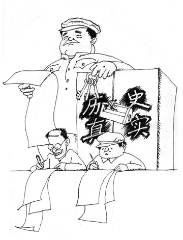

Cửu Bình 9: ĐCSTQ với bản tính lưu manh (audio)
Tài liệu gốc: http://dajiyuan.com/gb/4/12/4/n737542.htm
0 – Dẫn nhập
1 – Đảng cộng sản là gì?
2 – Đảng cộng sản Trung Quốc xuất sinh như thế nào?
3 – Chính quyền bạo lực của Đảng cộng sản Trung Quốc.
4 – Đảng cộng sản, một lực lượng phản vũ trụ.
5 – Giang Trạch Dân và Đảng cộng sản Trung Quốc lợi dụng lẫn nhau để đàn áp Pháp Luân Công.
6 – Đảng cộng sản Trung Quốc phá hoại văn hoá dân tộc.
7 – Lịch sử giết chóc của Đảng cộng sản Trung Quốc.
8 – Bản chất tà giáo của Đảng cộng sản Trung Quốc.
9 – Bản tính lưu manh của Đảng cộng sản Trung Quốc.
Lời mở đầu
|
 |
Phong trào cộng sản trải qua hơn một thế kỷ phô trương ầm ỹ chỉ mang lại cho nhân loại chiến tranh, nghèo khổ, tàn bạo và độc tài. Với sự sụp đổ của Liên-xô và các Đảng Cộng sản Đông Âu, màn kịch tai hại và tàn bạo này cuối cùng cũng đã bước sang màn cuối cùng vào cuối thế kỷ vừa qua. Không một ai, từ dân thường cho đến Tổng bí thư Đảng Cộng sản, còn tin vào những chuyện hoang đường của chủ nghĩa cộng sản nữa.
Chính quyền của Đảng Cộng sản ra đời không phải là “theo thiên ý” (quân quyền thần thụ) [1] cũng không phải là từ bầu cử dân chủ. Ngày nay, khi hệ tư tưởng của nó đã bị hủy diệt thì tính hợp pháp của sự thống trị của nó đang phải đối mặt với một thử thách chưa từng có trong lịch sử.
Đảng Cộng sản Trung quốc (ĐCSTQ) đã không thuận theo trào lưu của lịch sử mà tự động rút khỏi vũ đài lịch sử. Thay vào đó, nó đang sử dụng những thủ đoạn lưu manh đã được hình thành và phát triển trong nhiều thập kỷ qua các cuộc vận động chính trị để hồi phục lại cuộc đấu tranh điên cuồng của nó hòng tìm kiếm tính hợp pháp và để cải tử hồi sinh cái quyền lực đang chết của nó.
Các chính sách cải cách và mở cửa của ĐCSTQ là nhằm che đậy một mục đích tuyệt vọng là duy trì quyền lực và lợi ích của tập đoàn chính trị độc tài này. Bất chấp những trói buộc chặt chẽ, những thành tựu kinh tế đạt được nhờ nỗ lực của nhân dân Trung Quốc trong 20 năm qua đã không thuyết phục được ĐCSTQ buông lưỡi dao đồ tể của nó xuống. Thay vào đó, ĐCSTQ đã ăn cắp những thành quả này và sử dụng chúng để hợp pháp hóa sự thống trị của nó, làm cho lối hành xử lưu manh từ trước đến nay của nó còn giả dối và mị dân hơn. Điều đáng báo động nhất là ĐCSTQ đang cố gắng hết sức phá hủy nền tảng đạo đức của cả đất nước, cố gắng biến mọi công dân Trung Quốc, đến các cấp độ khác nhau, trở thành những kẻ lưu manh để tạo ra một môi trường thuận lợi cho ĐCSTQ “tiến bước với thời gian”.
Vào thời điểm lịch sử hôm nay, có một điều đặc biệt quan trọng là chúng ta cần hiểu rõ tại sao Đảng Cộng sản lại hành động giống như những tên lưu manh vô lại, vạch trần bản tính lưu manh của nó, để đất nước Trung Quốc có thể có được sự ổn định và hòa bình lâu dài, bước vào một kỷ nguyên không còn Đảng Cộng sản càng sớm càng tốt, và xây dựng, phục hồi một tương lai huy hoàng cho đất nước.
********************
I. Bản tính lưu manh của Đảng Cộng sản Trung quốc chưa bao giờ thay đổi
1. Đảng Cộng sản Trung quốc cải cách vì ai?
Xuyên suốt lịch sử, bất cứ khi nào ĐCSTQ phải đối đầu với những khủng hoảng, Đảng sẽ trình diễn một số dấu hiệu cải tiến, làm mê hoặc nhân dân hình thành những ảo tưởng về ĐCSTQ. Nhưng không có trường hợp ngoại lệ nào cả, các ảo tưởng đều đã tan vỡ hết lần này đến lần khác. Ngày nay ĐCSTQ đang theo đuổi các lợi ích ngắn hạn nhằm trình diễn một màn kịch kinh tế thịnh vượng để lại một lần nữa thuyết phục nhân dân tin vào các ảo tưởng về Đảng. Tuy nhiên, những xung đột cơ bản giữa lợi ích của Đảng với lợi ích của đất nước và nhân dân cho thấy rằng sự thịnh vượng giả này sẽ không thể kéo dài lâu. “Sự cải cách” mà ĐCSTQ đã hứa hẹn chỉ có một mục đích: để duy trì quyền thống trị của Đảng. Đó là một sự cải cách què quặt, một sự thay đổi trên bề mặt chứ không phải là bản chất. Nằm bên dưới của sự phát triển khập khiễng là một khủng hoảng xã hội trầm trọng. Một khi cuộc khủng hoảng bùng nổ ra, đất nước và nhân dân sẽ lại một lần nữa phải chịu khổ nạn.
Với sự thay đổi hàng ngũ lãnh đạo, thế hệ lãnh đạo mới của ĐCSTQ là những người đã không trải qua cuộc cách mạng cộng sản ngày trước, vì vậy sẽ có ít uy tín trong việc điều hành đất nước. Trong cuộc khủng hoảng về tính hợp pháp của mình, thì việc bảo vệ các quyền lợi của Đảng đã càng ngày càng trở thành một sự đảm bảo cơ bản cho việc duy trì quyền lợi của những cá nhân trong nội bộ ĐCSTQ. Bản chất của ĐCSTQ là ích kỷ. Đảng không biết kiêng nể là gì. Việc hy vọng một Đảng như vậy cống hiến cho sự nghiệp phát triển đất nước một cách hòa bình chỉ là một sự mơ tưởng hão huyền.
Chúng ta hãy xem tờ Nhân dân nhật báo, cái loa của ĐCSTQ, đã nói gì trên trang nhất ngày 12/7/2004: “Những phương pháp biện chứng lịch sử đã dạy cho các đảng viên ĐCSTQ điều này: Cái gì nên thay đổi thì phải thay đổi, nếu không, nó sẽ trở nên tồi tệ hơn. Cái gì không nên thay đổi thì không được thay đổi, nếu không, nó sẽ dẫn đến việc tự huỷ diệt”.
Cái gì là cái không nên thay đổi? Tờ Nhân dân nhật báo giải thích như thế này: “Đường lối cơ bản của Đảng là ‘một trung tâm, hai điểm cơ bản’ phải tồn tại vững chắc một trăm năm không một chút dao động”. [2]
Nhân dân không nhất định là hiểu “trung tâm” và “điểm cơ bản” là gì, nhưng mọi người đều biết rằng dã tâm của bóng ma tà linh cộng sản là duy trì quyền lợi tập thể của nó và chế độ độc tài sẽ không bao giờ thay đổi. Chủ nghĩa Cộng sản đã bị đánh bại trên toàn cầu, và số phận của nó ngày càng trở nên bi đát hơn. Tuy nhiên, trong khi vẫy vùng hấp hối thì một thứ càng bại hoại lại càng có khả năng tàn phá lớn hơn. Việc bàn luận cải thiện dân chủ với Đảng Cộng sản chẳng khác gì là bảo cọp dữ khoác lên một bộ da mới.
2. Không có Đảng Cộng sản thì Trung Quốc sẽ như thế nào?
Trong khi ĐCSTQ đang suy tàn, nhân dân đã bất ngờ khám phá ra rằng qua nhiều thập kỷ bóng ma tà ác của ĐCSTQ với những thủ đoạn lưu manh thiên biến vạn hóa đã nhồi nhét những nhân tố tà ác của nó vào trong mọi khía cạnh cuộc sống của người dân.
Khi Mao Trạch Đông chết, rất nhiều người Trung Quốc đã khóc cay đắng trước chân dung của Mao và tự hỏi “Không có Mao Chủ tịch, Trung Quốc sẽ ra sao?” Trớ trêu thay, 20 năm sau, khi Đảng Cộng sản đã mất đi tính hợp pháp để thống trị đất nước, Đảng Cộng sản Trung Quốc (ĐCSTQ) lại phát động một đợt tuyên truyền mới làm cho nhân dân một lần nữa lại tự hỏi một cách lo lắng: “Không có Đảng Cộng sản thì Trung Quốc sẽ ra sao?”
Trên thực tế, việc kiểm soát chính trị toàn diện và rộng khắp của ĐCSTQ đã khắc sâu vào nền văn hóa Trung Quốc hiện nay và vào tư tưởng của người Trung Quốc đến nỗi ngay cả tiêu chuẩn mà người Trung Quốc dùng để đánh giá ĐCSTQ cũng có dấu ấn của ĐCSTQ hoặc thậm chí tiêu chuẩn đó cũng bắt nguồn từ ĐCSTQ. Nếu trong quá khứ ĐCSTQ khống chế nhân dân bằng cách nhồi nhét những nhân tố của nó vào họ, thì giờ đây ĐCSTQ đã gặt hái được những gì mà nó đã gieo trồng, bởi vì những thứ được nhồi nhét vào trong tâm trí nhân dân đã được tiêu hóa và hấp thụ vào tận các tế bào của họ. Nhân dân suy nghĩ theo lô-gíc của ĐCSTQ và tự đặt mình vào vị trí của ĐCSTQ mà phán xét đúng sai. Nói về việc ĐCSTQ thảm sát các sinh viên học sinh biểu tình ngày 4/6/1989, một số người bảo “Nếu tôi là Đặng Tiểu Bình tôi cũng sẽ dập tắt cuộc biểu tình bằng xe tăng”. Trong cuộc đàn áp Pháp Luân Công, có người hùa theo nói rằng “Nếu tôi là Giang Trạch Dân, tôi cũng sẽ tiêu diệt Pháp Luân Công”. Về việc cấm tự do ngôn luận, có người bảo rằng “Nếu tôi là ĐCSTQ tôi cũng làm như vậy”. Chân lý và lương tri đã biến mất, chỉ còn lại lô-gíc của ĐCS. Đây là một trong những thủ đoạn độc ác và ghê tởm nhất mà ĐCSTQ sử dụng xuất phát từ bản chất lưu manh của nó. Chừng nào mà những độc tố tinh thần mà ĐCSTQ đã tiêm nhiễm vẫn còn ở trong đầu óc của nhân dân, thì ĐCSTQ vẫn còn có thể tiếp tục thâu đoạt năng lượng để duy trì mạng sống vô đạo của nó.
“Trung Quốc sẽ làm được gì nếu không có Đảng Cộng sản?” Lối suy nghĩ này hoàn toàn phù hợp với mục đích của ĐCSTQ là làm cho nhân dân suy luận theo lô-gíc của chính nó.
Trung Quốc đã trải qua 5000 năm lịch sử của nền văn minh của mình mà không có ĐCSTQ. Thực tế, không có một đất nước nào trên thế giới sẽ ngừng phát triển xã hội chỉ vì sự sụp đổ của một chế độ nào đó. Tuy nhiên sau hàng thập kỷ dưới sự thống trị của ĐCSTQ, nhân dân đã không còn có thể nhìn nhận ra được thực tế này nữa. Sự tuyên truyền lâu dài của ĐCSTQ đã rèn luyện nhân dân nghĩ về Đảng như là mẹ của mình. Các đường lối chính trị của ĐCSTQ có mặt ở khắp mọi nơi đã làm cho nhân dân không còn có thể nhận thức được cuộc sống sẽ như thế nào nếu không có ĐCSTQ.
Không có Mao Trạch Đông, Trung Quốc đã không sụp đổ. Vậy thì nếu không có ĐCSTQ, Trung Quốc có sụp đổ không?
3. Đâu là nguồn gốc thật sự của sự hỗn loạn?
Rất nhiều người biết và không thích những hành vi quỷ quyệt của Đảng Cộng sản Trung Quốc (ĐCSTQ), và ghê tởm những thứ đấu tranh và dối trá của nó. Nhưng đồng thời họ lại sợ hãi những cuộc vận động chính trị của ĐCSTQ và những hậu quả hỗn loạn đi theo sau, và sợ sự rối loạn một lần nữa sẽ lại viếng thăm Trung Quốc. Vì vậy, một khi ĐCSTQ dùng chữ “rối loạn” để đe dọa nhân dân; người dân liền lặng lẽ chấp nhận sự thống trị của ĐCSTQ và cảm thấy vô vọng khi phải đối diện với quyền độc tài của ĐCSTQ.
Trên thực tế, với quân đội và cảnh sát vũ trang đông hàng triệu người, ĐCSTQ là nguồn rối loạn thật sự. Những người dân thường không có tài nào gây ra hoặc có khả năng đem sự hỗn loạn đến cho đất nước. Chỉ có ĐCSTQ thoái hóa mới có thể nhẫn tâm đẩy đất nước vào tình trạng hỗn loạn từ bất cứ dấu hiệu thay đổi nào. “Ổn định quan trọng hơn tất cả mọi thứ khác” và “Diệt trừ tất cả các nhân tố bất ổn định từ trong trứng nước” — những khẩu hiệu này đã trở thành cơ sở lý luận mà ĐCSTQ dùng để đàn áp nhân dân. Vậy thì ai là nguyên nhân lớn nhất của sự bất ổn định ở Trung Quốc? Chẳng phải chính là ĐCSTQ chuyên quyền bạo chính hay sao? ĐCSTQ là chủ mưu xúi giục gây ra hỗn loạn, và sau đó lại dùng chính sự hỗn loạn mà nó tạo ra ấy để ép buộc nhân dân. Những bọn lưu manh xưa nay đều làm như thế cả.
********************
II. Đảng Cộng sản Trung Quốc hy sinh việc phát triển kinh tế
1. Cướp công thành quả lao động vất vả của nhân dân
ĐCSTQ tự nhận “tính hợp pháp” của nó nhờ sự phát triển kinh tế hơn 20 năm qua. Tuy nhiên trên thực tế nhân dân Trung Quốc đã dần dần đạt được sự phát triển đó sau khi ĐCSTQ nới lỏng những gông cùm của nó một chút, do đó sự phát triển kinh tế không có liên quan gì đến công lao của chính ĐCSTQ. Tuy nhiên, ĐCSTQ đã tự nhận sự phát triển kinh tế này là thành tựu của chính nó và bảo nhân dân phải biết ơn Đảng, như thể là sẽ không có một sự phát triển nào nếu không có ĐCSTQ. Trên thực tế tất cả chúng ta đều biết rằng nhiều đất nước phi cộng sản từ lâu đã đạt được sự tăng trưởng kinh tế nhanh hơn.
Khi giành được huy chương vàng tại các thế vận hội Olympic, vận động viên bắt buộc phải cảm ơn Đảng. Đảng không ngần ngại sử dụng hình ảnh bày đặt “thể thao đại quốc” để tự ca ngợi mình. Trung Quốc đã phải chịu nhiều mất mát trong bệnh dịch SARS, nhưng tờ Nhân dân nhật báo đã đưa tin rằng Trung Quốc đã đánh bại virus “nhờ lý luận cơ bản, đường lối cơ bản, nguyên tắc cơ bản và kinh nghiệm cơ bản của Đảng”. Việc phóng phi thuyền Thần Châu 5 của Trung Quốc thành công là nhờ các chuyên gia khoa học công nghệ du hành vũ trụ, nhưng ĐCSTQ đã lấy đó làm bằng chứng để chứng tỏ rằng chỉ có ĐCSTQ mới có thể lãnh đạo nhân dân Trung Quốc gia nhập hàng ngũ của các cường quốc trên thế giới. Còn về việc Trung Quốc đăng cai tổ chức thế vận hội Olympic năm 2008, thực ra các nước phương Tây trao cho Trung Quốc một “cành Ô-liu” (biểu trưng của sự đề nghị hòa bình) để khuyến khích Trung Quốc cải thiện tình hình nhân quyền, nhưng ĐCSTQ đã dùng điều này để hỗ trợ cho những lời tự tuyên bố về tính hợp pháp của nó và để viện cớ cho việc đàn áp nhân dân Trung Quốc. “Tiềm năng thị trường khổng lồ” của Trung Quốc mà các nhà đầu tư nước ngoài tìm kiếm, bắt nguồn từ khả năng tiêu thụ của 1,3 tỷ dân Trung Quốc. ĐCSTQ đã cướp công của tiềm năng này, và biến nó thành một vũ khí lợi hại để bắt các nước phương Tây phải hợp tác với sự thống trị của ĐCSTQ.
Đảng Cộng sản Trung Quốc (ĐCSTQ) đổ tất cả những thứ xấu cho các thế lực phản động và động cơ ngầm của các cá nhân, và nhận tất cả những thứ tốt về cho sự lãnh đạo của Đảng. ĐCSTQ tận dụng tất cả mọi thành quả để làm cho những lời tự nhận về tính hợp pháp của sự thống trị của nó có sức thuyết phục hơn. Ngay cả những việc làm sai trái của Đảng cũng có thể được biến thành cái gì đó “tốt” để phục vụ cho các mục đích của nó. Ví dụ khi sự thật về sự tràn lan của bệnh AIDS đã không còn có thể che dấu được nữa, thì ĐCSTQ đã bất thần tạo ra một luận điệu mới. Đảng đã khéo léo huy động bộ máy tuyên truyền của mình, sử dụng tất cả mọi người từ các diễn viên nổi tiếng đến cả tổng bí thư của Đảng để tô vẽ chân dung của tên thủ phạm đầu sỏ, là ĐCSTQ, thành như là người mang phúc lành đến cho các bệnh nhân, như là một người hùng tiêu diệt bệnh AIDS, như là một người thách đấu với bệnh tật. Trong việc xử lý một vấn đề sinh tử nghiêm trọng như vậy, mà tất cả những gì ĐCSTQ có thể nghĩ đến là làm thế nào để sử dụng vấn đề đó để tự ca ngợi mình. Chỉ có một kẻ chủ mưu độc ác như ĐCSTQ mới có thể hành động nhẫn tâm như vậy, trâng tráo nham hiểm cướp công và hoàn toàn khinh rẻ mạng sống của con người.
2. Những hành động thiển cận gây nên những bất lợi về mặt kinh tế
Khi phải đối mặt với “khủng hoảng về tính hợp pháp” nghiêm trọng, ĐCSTQ đã thực hiện các chính sách cải cách và mở cửa vào những năm 1980 nhằm để duy trì sự thống trị của nó. Sự háo hức thành công nhanh chóng của Đảng đã đặt Trung Quốc vào một thế bất lợi mà những nhà kinh tế học gọi là “tai họa cho kẻ đến muộn”.
Những khái niệm “tai họa cho kẻ đến muộn” hay “lợi thế cho kẻ đến muộn”, như một số học giả khác đặt tên, là để nói đến một thực tế rằng các nước kém phát triển, có nghĩa là bắt đầu muộn quá trình phát triển, có thể bắt chước các nước tiên tiến trong nhiều mặt. Có hai hình thức bắt chước: bắt chước hệ thống xã hội và bắt chước các mô hình công nghệ và công nghiệp. Thường thì bắt chước hệ thống xã hội là khó, bởi vì việc cải tổ hệ thống có thể gây nguy hiểm đến các lợi ích của một số nhóm chính trị hay xã hội nào đó. Vì vậy các nước kém phát triển có khuynh hướng bắt chước công nghệ của các nước tiên tiến. Mặc dù việc bắt chước công nghệ có thể tạo ra sự tăng trưởng kinh tế ngắn hạn, nhưng nó có thể gây nên nhiều rủi ro tiềm ẩn hoặc thậm chí thất bại trong việc phát triển dài hạn.
Chính xác là “tai họa cho kẻ đến muộn”, hay con đường dẫn đến thất bại, là lộ trình mà ĐCSTQ đã và đang đi theo. Trong hai thập kỷ qua, “sự bắt chước công nghệ” của Trung Quốc đã đem lại một số thành quả mà ĐCSTQ đã lợi dụng để chứng tỏ “tính hợp pháp” của nó và tiếp tục ngăn cản việc cải cách chính trị mà có thể sẽ làm tổn hại tới các lợi ích riêng của ĐCSTQ. Vì vậy, các lợi ích dài hạn của đất nước đã bị hy sinh.
3. Những cái giá đau đớn phải trả cho sự phát triển kinh tế của Đảng Cộng sản Trung quốc
Trong khi ĐCSTQ không ngừng khoe khoang về những tiến bộ kinh tế của mình, thì trên thực tế, nền kinh tế của Trung Quốc ngày nay xếp hạng trên thế giới còn thấp hơn thời trị vì của vua Càn Long (1711-1799) trong triều đại nhà Thanh. Trong thời vua Càn Long, GDP của Trung Quốc chiếm 51% tổng số GDP của toàn thế giới. Khi Tôn Trung Sơn thành lập nước Cộng hòa Trung Quốc (thời Quốc Dân Đảng) vào năm 1911, GDP của Trung Quốc chiếm 27% tổng số GDP của toàn thế giới. Vào khoảng năm 1923, tỷ lệ phần trăm đã bị rớt xuống, nhưng vẫn còn được 12%. Đến năm 1949, khi ĐCSTQ lên nắm quyền, tỷ lệ đó chỉ còn 5.7%, và đến năm 2003, GDP của Trung Quốc chỉ còn dưới 4% tổng số GDP của toàn thế giới. Tương phản với sự suy giảm kinh tế trong thời Quốc Dân Đảng do nhiều thập kỷ chiến tranh gây nên, thì sự suy giảm kinh tế liên tục trong thời kỳ ĐCSTQ cầm quyền lại diễn ra trong thời bình.
Ngày nay, để hợp pháp hóa quyền lực của mình, ĐCSTQ háo hức muốn có những thành công nhanh chóng và những lợi ích tức thì. Sự cải cách kinh tế khập khiễng mà ĐCSTQ thực hiện để bảo vệ các lợi ích riêng của chính nó đã gây ra những tổn thất lớn cho đất nước Trung Quốc. Sự tăng trưởng kinh tế nhanh chóng trong 20 năm qua phần lớn là dựa trên việc lạm dụng quá mức hoặc thậm chí lãng phí các nguồn lực, và đã đạt được với cái giá phải trả là sự phá hủy môi trường. Một phần đáng kể của GDP của Trung Quốc là đạt được bằng cách hy sinh những cơ hội của các thế hệ tương lai. Vào năm 2003, Trung Quốc chỉ chiếm dưới 4% của nền kinh tế toàn thế giới, trong khi đó lượng tiêu thụ thép, xi-măng và những vật liệu khác của Trung Quốc chiếm 1/3 tổng lượng tiêu thụ toàn cầu. [3]
Từ những năm 1980 cho đến cuối thập kỷ 1990, sự sa mạc hóa ở Trung Quốc đã tăng từ hơn 1000 một chút lên đến 2460 kilô mét vuông. Đất trồng trọt bình quân đầu người cũng giảm từ khoảng 2 mẫu vào 1980 xuống chỉ còn 1,43 mẫu vào năm 2003. [4] Sự bùng phát tràn lan việc thu hồi/giải tỏa đất đai để phát triển [công nghiệp] đã làm cho Trung Quốc mất khoảng 100 triệu mẫu đất trồng trọt chỉ trong vòng có một vài năm. Tuy nhiên, trên thực tế tỷ lệ đất bị thu hồi được đem sử dụng chỉ là 43%. Hiện thời, tổng số lượng nước phế thải là 43,95 tỷ tấn, vượt quá khả năng của môi trường khoảng 82%. Trong bảy hệ thống sông chính, 40,9% lượng nước không còn có thể dùng để cho người và súc vật uống. 75% hồ nước bị ô nhiễm nên đã sinh ra nhiều mức độ dinh dưỡng khác nhau. [5] Chưa bao giờ sự xung đột giữa con người và thiên nhiên ở Trung Quốc lại căng thẳng như ngày nay. Cả Trung Quốc và thế giới đều không thể trụ vững được với sự tăng trưởng không lành mạnh như vậy. Bị mê mờ trước sự hào nhoáng bề mặt của các cao ốc và những khu nhà lớn, nhân dân đã không nhận thức được sự khủng hoảng sinh thái ở trước mặt. Tuy nhiên, một khi đến lúc thiên nhiên trừng phạt nhân loại, nó sẽ mang đến những hậu quả thảm khốc cho đất nước Trung Quốc.
So sánh với nước Nga, kể từ khi rũ bỏ chủ nghĩa cộng sản, Nga đã thực hiện cải cách kinh tế và chính trị cùng một lúc. Sau khi trải qua một khoảng thời gian khó khăn ngắn, Nga bắt đầu phát triển nhanh chóng. Từ năm 1999 cho đến năm 2003, GDP của Nga đã tăng tổng cộng được 29,9%. Mức sống của nhân dân cũng đã được cải thiện đáng kể. Giới thương mại phương Tây đã không chỉ bắt đầu nói về “hiện tượng kinh tế Nga”, mà đã thực sự bắt đầu đầu tư vào Nga, một điểm nóng mới, trên diện rộng. Thứ hạng của Nga trong số các nước hấp dẫn nhất cho việc đầu tư đã nhảy từ vị trí thứ 17 vào năm 2002 lên đến vị trí thứ 8 trong năm 2003, lần đầu tiên trở thành một trong 10 nước hấp dẫn nhất trên thế giới cho việc đầu tư.
Ngay cả Ấn Độ, một đất nước mà trong tư tưởng của hầu hết người dân Trung Quốc là nghèo nàn và đầy những xung đột sắc tộc đã có sự phát triển vượt bậc và đã đạt được tốc độ tăng trưởng kinh tế từ 7 đến 8% hằng năm kể từ khi bắt đầu cải cách kinh tế vào năm 1991. Ấn Độ có một hệ thống pháp luật tương đối hoàn chỉnh trong một nền kinh tế thị trường, một hệ thống tài chính lành mạnh, một hệ thống dân chủ phát triển tốt, và tâm thái của nhân dân ổn định. Ấn Độ đã được cộng đồng quốc tế công nhận là một nước có tiềm năng phát triển lớn.
Tương phản lại, ĐCSTQ chỉ thực hiện cải cách kinh tế mà không có cải cách chính trị. Vẻ bề ngoài giả tạo của một nền kinh tế phát triển ngắn hạn đã cản trở “sự phát triển của các hệ thống xã hội” một cách tự nhiên. Chính việc cải cách khập khiễng này đã gây ra sự mất cân bằng càng ngày càng lớn trong xã hội Trung Quốc và làm các mâu thuẫn trong xã hội càng ngày càng thêm sâu sắc. Những thành quả về mặt tài chính mà nhân dân đạt được không được các hệ thống xã hội ổn định bảo vệ. Hơn nữa, trong quá trình tư hữu hóa các tài sản nhà nước, những kẻ nắm quyền hành trong ĐCSTQ đã lợi dụng chức vụ để nhét đầy túi tham của mình.
4. Đảng Cộng sản Trung quốc lừa nông dân hết lần này đến lần khác
ĐCSTQ dựa vào nông dân để đoạt quyền lực. Những người dân nông thôn ở các vùng do ĐCSTQ kiểm soát đã cống hiến tất cả những gì họ có cho ĐCSTQ từ khi Đảng mới còn phôi thai. Nhưng sau khi ĐCSTQ chiếm được quyền kiểm soát đất nước, những người nông dân đã phải chịu sự phân biệt đối xử nghiêm trọng.
Sau khi ĐCSTQ thành lập chính quyền, nó đã dựng lên một hệ thống vô cùng bất công: đó là hệ thống đăng ký hộ khẩu. Hệ thống này phân loại nhân dân thành dân thành thị và dân nông thôn, tạo ra một sự chia rẽ vô lý và đối kháng trong nội bộ đất nước. Nông dân không có bảo hiểm y tế, không có trợ cấp thất nghiệp, không có lương hưu và không được vay tiền của ngân hàng. Nông dân là giai cấp nghèo khổ nhất ở Trung Quốc, nhưng cũng lại là giai cấp bị đánh thuế nặng nhất. Nông dân phải đóng tiền cho quỹ tiết kiệm bắt buộc, quỹ phúc lợi xã hội, quỹ quản lý hành chính, lệ phí giáo dục bổ xung, lệ phí kiểm soát sinh đẻ, lệ phí tổ chức và huấn luyện lực lượng dân quân, lệ phí xây dựng đường quốc lộ và phí để trả lương cho những người phục vụ trong quân đội. Bên cạnh tất cả các lệ phí này, họ còn phải bán một phần thóc gạo mà họ sản xuất được với một giá cố định cho nhà nước như một yêu cầu bắt buộc, và phải trả thuế nông nghiệp, thuế đất, thuế đặc sản địa phương, thuế giết mổ và còn nhiều loại thuế má khác nữa. Ngược lại, dân thành thị không phải trả các khoản thuế và lệ phí này.
Vào đầu năm 2004, Thủ tướng Ôn Gia Bảo đã công bố “Tài liệu số 1” nói rằng nông thôn Trung Quốc đang phải đối mặt với thời kỳ khó khăn nhất kể từ khi bắt đầu cải cách kinh tế năm 1978. Thu nhập của hầu hết nông dân đã không tăng mà thậm chí còn giảm. Họ đã trở nên nghèo hơn, và khoảng cách thu nhập giữa dân nông thôn và dân thành thị tiếp tục nới rộng hơn.
Trong một lâm trường ở phía đông tỉnh Tứ Xuyên, chính quyền cấp trên đã chi 500 nghìn nhân dân tệ (khoảng 60 nghìn 500 đô la Mỹ) cho một dự án trồng lại rừng. Những người lãnh đạo lâm trường trước hết đã bỏ túi 200 nghìn nhân dân tệ, rồi mới cấp 300 nghìn còn lại cho việc trồng rừng. Khi đi qua mỗi cấp quản lý, số tiền lại bị thất thoát một lần, cuối cùng chỉ còn lại rất ít cho những người nông dân địa phương trực tiếp trồng rừng. Chính quyền không cần phải lo rằng những người nông dân sẽ từ chối thực hiện dự án vì không đủ kinh phí. Những người nông dân này nghèo khổ đến nỗi họ phải làm việc với một khoản thù lao rất ít ỏi. Đây là một trong những lý do giải thích tại sao mà những sản phẩm sản xuất ở Trung Quốc lại có thể bán rẻ đến như vậy.
5. Dùng lợi ích kinh tế để gây sức ép đối với các nước phương Tây
Nhiều người tưởng rằng buôn bán với Trung Quốc sẽ thúc đẩy nhân quyền, tự do ngôn luận và cải cách dân chủ ở Trung Quốc. Sau hơn một thập kỷ, rõ ràng là giả định này chỉ là sự mơ tưởng. Một so sánh về các nguyên tắc làm ăn ở Trung Quốc và các nước phương Tây cho ta một ví dụ điển hình. Sự công bằng và minh bạch của xã hội phương Tây bị thay thế bằng những quan hệ cá nhân, hối lộ và biển thủ ở Trung Quốc. Nhiều công ty phương Tây đã trở thành những thủ phạm hàng đầu vì đã làm trầm trọng thêm tệ nạn tham nhũng ở Trung Quốc. Một số công ty thậm chí còn giúp đỡ ĐCSTQ che dấu những hành vi vi phạm nhân quyền và đàn áp chính nhân dân của nó.
ĐCSTQ hành động như Mafia bằng cách chơi con bài kinh tế trong chính sách đối ngoại. Hợp đồng mua máy bay của Trung Quốc sẽ được giao cho Pháp hay Mỹ là còn tùy thuộc vào nước nào giữ im lặng về vấn đề nhân quyền của ĐCSTQ. Có rất nhiều thương gia và chính trị gia phương Tây bị dẫn dắt và điều khiển bởi lợi nhuận kinh tế từ Trung Quốc. Một số công ty công nghệ thông tin từ Bắc Mỹ đã cung cấp các sản phẩm chuyên dụng cho ĐCSTQ để phong tỏa Internet. Để thâm nhập vào thị trường Trung Quốc, một số website trên Internet đã đồng ý tự kiểm duyệt mình và lọc bỏ đi những thông tin mà ĐCSTQ không thích.
Theo số liệu từ Bộ Thương mại của Trung Quốc, vào cuối tháng 4 năm 2004, Trung Quốc đã thống kê được tổng cộng có 990 tỉ đô la Mỹ đầu tư từ nước ngoài vào trong nhiều dự án khác nhau. “Sự truyền máu” khổng lồ cho nền kinh tế của chính quyền của ĐCSTQ từ các nguồn vốn nước ngoài là rõ rành rành. Nhưng trong quá trình đầu tư, ngoại tệ đã không mang đến khái niệm dân chủ, tự do và nhân quyền như những nguyên tắc cơ bản cho nhân dân Trung Quốc. ĐCSTQ đã lợi dụng, trong sự tuyên truyền của nó, sự hợp tác vô điều kiện từ phía các nhà đầu tư nước ngoài và chính phủ của các nước và sự xu nịnh của một số nước. Bằng cách lợi dụng sự thịnh vượng trên bề mặt của nền kinh tế Trung Quốc, các quan chức của ĐCSTQ đã trở nên cực kỳ lão luyện trong việc câu kết với các thương nhân để chia nhau tài sản của nhà nước và ngăn cản việc cải cách chính trị.
********************
III. Kỹ thuật tẩy não của Đảng Cộng sản Trung quốc đã chuyển từ “trắng trợn” sang “tinh vi”
Người ta thường nghe nói rằng: “Tôi biết trong quá khứ Đảng Cộng sản Trung Quốc (ĐCSTQ) thường xuyên nói dối, nhưng lần này nó nói thật”. Trớ trêu thay, hồi tưởng lại, đây là câu mà mọi người thường nói mỗi lần ĐCSTQ có sai lầm nghiêm trọng trong quá khứ. Điều này phản ánh khả năng mà ĐCSTQ đã tích lũy được qua nhiều thập kỷ là dùng những lời dối trá để lừa mị nhân dân.
Nhân dân đã hình thành một số phản kháng đối với những câu chuyện hoang đường của ĐCSTQ. Đáp lại, sự tuyên truyền bịa đặt của ĐCSTQ đã trở nên “tinh xảo” và “chuyên nghiệp” hơn. Phát triển từ những lời tuyên truyền kiểu hô khẩu hiệu trong quá khứ, những lời dối trá của ĐCSTQ đã trở nên “tinh vi” và “xảo quyệt” hơn. Đặc biệt là trong điều kiện phong tỏa thông tin mà ĐCSTQ đã thực hiện trên toàn Trung Quốc, Đảng dựng chuyện dựa trên một phần sự thật để đánh lạc hướng công chúng, điều này thậm chí còn có hại và dối trá hơn cả những câu chuyện hoang đường.
Chinascope (Trung Quốc tụ tiêu), một tờ báo tiếng Anh, đăng một bài viết hồi tháng 10 năm 2004 phân tích những trường hợp mà ĐCSTQ đã sử dụng những thủ đoạn tinh vi hơn là bịa đặt dựng chuyện để che đậy sự thật. Khi dịch SARS bùng phát ở lục địa Trung Quốc năm 2003, thế giới bên ngoài đã nghi ngờ rằng Trung Quốc đã che giấu thông tin về dịch bệnh, và thậm chí ĐCSTQ đã lặp đi lặp lại nhiều lần chối không thừa nhận nó. Để tìm hiểu xem ĐCSTQ có trung thực khi đưa tin về dịch bệnh SARS hay không, tác giả của bài báo đã đọc tất cả trên 400 bài về dịch bệnh SARS từ khi bắt đầu cho đến tháng 4 năm 2003 đăng trên website của Tân Hoa Xã.
Những bài báo này kể một câu chuyện như sau: Ngay sau khi dịch bệnh SARS xuất hiện, các cấp chính quyền từ Trung ương đến địa phương đã huy động các chuyên gia kịp thời chữa trị cho các bệnh nhân và sau đó họ đã được xuất viện khi khỏi bệnh. Để đối phó với những kẻ gây rối kích động nhân dân mua hàng hóa tích trữ để tránh không phải đi ra khỏi nhà phòng khi bệnh dịch trở nên lan tràn, chính phủ đã ngay lập tức chặn đứng những tin đồn và thi hành các biện pháp ngăn không cho những tin đồn lan rộng, vì vậy trật tự xã hội đã được đảm bảo một cách có hiệu lực. Mặc dù có một số rất ít các lực lượng chống Trung Quốc đã vô cớ nghi ngờ chính quyền Trung Quốc che giấu sự thật, hầu hết nhân dân và các nước khác không tin những tin đồn này. Hội chợ Thương mại Quảng Châu chuẩn bị diễn ra đang chờ đón sự tham gia đông nhất chưa từng có của các doanh nghiệp trên khắp thế giới. Những du khách đến từ nước ng̣̣oài khẳng định rằng việc đi lại ở Trung Quốc là rất an toàn. Đặc biệt là các chuyên gia của Tổ chức Y tế Thế giới – WHO [những người đã bị ĐCSTQ lừa] đã công bố rằng chính phủ Trung Quốc đã sẵn sàng hợp tác và thực hiện những biện pháp cần thiết để đối phó với SARS, vì vậy sẽ không có vấn đề gì. Và các chuyên gia đã phê chuẩn tỉnh Quảng Đông là hết dịch (sau hơn 20 ngày trì hoãn) sau khi đã khảo sát hiện trường.
Hơn 400 bài viết này đã tạo ra cho tác giả một ấn tượng rằng ĐCSTQ đã minh bạch trong suốt 4 tháng này và đã hành động một cách có trách nhiệm để bảo vệ sức khỏe của nhân dân, và đã thuyết phục nhân dân rằng ĐCSTQ đã không che dấu bất cứ điều gì. Tuy nhiên, vào 20-4-2003, Văn phòng Thông tin của Hội đồng Nhà nước (Quốc vụ viện tân văn) đã thông báo trong buổi họp báo của mình rằng SARS đã thật sự bùng phát ở Trung Quốc và như vậy đã gián tiếp thừa nhận rằng chính quyền đã che giấu bệnh dịch. Chỉ khi đó tác giả này mới thấy sự thật và hiểu ra các thủ đoạn lưu manh lừa đảo mà ĐCSTQ sử dụng cũng đã “tiến cùng thời gian”.
Trong cuộc tổng tuyển cử ở Đài Loan, ĐCSTQ đã sử dụng cùng một thủ đoạn “tinh xảo” tung tin rằng cuộc bầu cử tổng thống sẽ dẫn đến các tai họa lớn như: tỷ lệ tự tử sẽ tăng vọt, thị trường chứng khoán sụp đổ, “các căn bệnh kỳ quặc” gia tăng, các chứng rối loạn tâm thần, sự di dân ra khỏi đảo, sự hận thù trong gia đình, thái độ nhẫn tâm với đời, khủng hoảng thị trường, bắn giết bừa bãi trên đường phố, biểu tình và chống đối, bao vây dinh tổng thống, rối loạn xã hội, trò hề chính trị, v.v… ĐCSTQ đã hàng ngày nhồi nhét những luận điệu này vào đầu người dân ở lục địa Trung Quốc, nhằm dẫn dắt nhân dân đến chỗ tin rằng tất cả những tai họa này là kết quả thảm khốc của bầu cử và Trung Quốc không bao giờ nên tổ chức bầu cử dân chủ.
Về “vấn đề” Pháp Luân Công, ĐCSTQ đã thể hiện một trình độ kỹ thuật dối trá thậm chí còn cao hơn để chụp mũ mưu hại Pháp Luân Công. ĐCSTQ dàn dựng hết màn kịch này đến màn kịch khác. Thảo nào mà đã có quá nhiều người dân Trung Quốc bị lừa gạt. Sự tuyên truyền bẩn thỉu của ĐCSTQ dối trá đến nỗi những nạn nhân của nó đã mù quáng tin vào những lời nói dối và nghĩ rằng họ đã nắm được sự thật.
Sự tuyên truyền tẩy não của ĐCSTQ trong nhiều thập kỷ qua đã trở nên lừa dối tinh xảo hơn, đó cũng là sự phát triển tự nhiên của bản tính lưu manh của ĐCSTQ.
********************
IV. Đạo đức giả của Đảng Cộng sản Trung quốc trong vấn đề nhân quyền
1. Từ lợi dụng dân chủ để chiếm đoạt quyền lực cho đến giả vờ dân chủ để duy trì chế độ độc tài
“Trong một đất nước dân chủ, chủ quyền nằm trong tay nhân dân, phù hợp với Đạo Trời và Đất. Nếu một nước tự nhận là dân chủ nhưng chủ quyền không thuộc về nhân dân, điều đó nhất định là không đi đúng đường mà chỉ có thể là lệch hướng, và nước này không phải là một nước dân chủ… làm sao mà dân chủ có thể trở thành hiện thực nếu không chấm dứt sự cầm quyền của Đảng và nếu không có một cuộc bầu cử phổ thông đầu phiếu? Hãy trả lại quyền lực của nhân dân cho nhân dân!”.
Có phải đoạn trích dẫn trên nghe giống như là từ một bài viết của “các thế lực thù địch ở hải ngoại” với mục đích là đả kích ĐCSTQ? Trên thực tế, tuyên bố trên là từ một bài viết đăng trên tờ Tân Hoa nhật báo, tờ báo chính thức của ĐCSTQ số ra ngày 27-9-1945.
ĐCSTQ đã từng hô hoán ầm ỹ “bầu cử phổ thông đầu phiếu” và đòi hỏi “trả lại quyền lực của nhân dân cho nhân dân” nhưng sau đó lại coi “bầu cử phổ thông đầu phiếu” như là một điều cấm kỵ kể từ khi nó cướp được chính quyền. Những người dân được mệnh danh là “những người chủ của đất nước” lại không có bất kể một quyền quyết định gì. Không có từ ngữ nào có thể mô tả được bản tính lưu manh của ĐCSTQ.
Nếu bạn cho rằng những gì đã qua thì để nó qua và tà giáo Trung Cộng phát đạt nhờ giết chóc và cai trị đất nước bằng cách lừa dối sẽ tự cải tạo mình và trở nên hiền lành và sẵn lòng “trả lại quyền lực của nhân dân cho nhân dân”, thì bạn đã lầm. Hãy nghe những lời của tờ Nhân dân nhật báo, cái loa của ĐCSTQ nói ngày 23/10/2004, 60 năm sau công bố đã trích dẫn ở trên: “Việc kiểm soát không nhân nhượng đối với ý thức hệ là nền tảng chính trị và tư tưởng thiết yếu để củng cố quyền lực của Đảng”.
Gần đây, ĐCSTQ đã đề xuất cái gọi là “Nguyên tắc Ba Không” mới, [6] mà thứ nhất là “Phát triển Không Bàn luận”. “Phát triển” ở đây là giả, còn “Không bàn luận” ở đây là nhấn mạnh nguyên tắc “một hội trường chỉ có một tiếng nói”, đó mới là mục đích thực sự của ĐCSTQ.
Khi phóng viên hãng tin CBS nổi tiếng Mike Wallace hỏi Giang Trạch Dân vào năm 2000 là tại sao Trung Quốc vẫn chưa tổ chức bầu cử dân chủ, Giang Trạch Dân đã trả lời: “Học thức của nhân dân Trung Quốc vẫn còn kém quá”.
Tuy nhiên, ngay từ ngày 25/2/1939, ĐCSTQ đã gào thét trên tờ Tân Hoa nhật báo của mình rằng “Họ (Quốc Dân Đảng) nghĩ rằng chính trị dân chủ ở Trung Quốc không nên được thực hiện ngày nay mà phải đợi đến vài năm sau nữa. Họ hy vọng rằng vấn đề chính trị dân chủ nên được hoãn lại cho đến khi trình độ kiến thức và học vấn của người dân Trung Quốc đạt đến trình độ của các nước dân chủ tư sản ở Châu Âu và Châu Mỹ… nhưng chỉ có ở trong hệ thống dân chủ thì việc giáo dục và đào tạo nhân dân mới trở nên dễ dàng hơn”.
Sự khác biệt đạo đức giả giữa những gì Tân Hoa nói năm 1939 và những gì Giang Trạch Dân nói năm 2000 đã phản ánh chân tướng của bản tính lưu manh của ĐCSTQ.
Sau cuộc thảm sát trên Quảng trường Thiên An Môn năm 1989, ĐCSTQ đã tái ra nhập vũ đài thế giới với một kỷ lục nhân quyền tồi tệ nhất. Lịch sử đã cho ĐCSTQ một cơ hội chọn lựa. Hoặc là nó phải tôn trọng nhân dân của mình và phải thực sự cải thiện tình hình nhân quyền hoặc là nó sẽ tiếp tục chà đạp nhân quyền ở Trung Quốc trong khi giả vờ với thế giới bên ngoài là nó tôn trọng nhân quyền để tránh khỏi bị cộng đồng quốc tế lên án.
Bất hạnh thay, kiên định với bản tính bạo ngược của nó, ĐCSTQ đã không do dự mà chọn con đường thứ hai. Nó đã tập hợp và duy trì một số lượng lớn những kẻ có tài nhưng vô đạo đức trong các lĩnh vực khoa học và tôn giáo, và cụ thể chỉ đạo họ dựng lên những tuyên truyền dối trá ở hải ngoại để truyền bá những tiến bộ bịa đặt về nhân quyền của ĐCSTQ. Nó bịa ra một loạt các ngụy biện nhân quyền như “quyền sống còn”, hay quyền được có chỗ nương thân và lương thực. Lý lẽ ngụy biện kiểu như thế này: Khi người ta bị đói, họ không có quyền lên tiếng có phải không? Thậm chí nếu những người bị đói không thể lên tiếng được, những người ăn uống no đủ có được phép lên tiếng cho những người bị đói hay không? ĐCSTQ thậm chí còn cố gắng lừa gạt nhân dân Trung Quốc và các nước dân chủ ở phương Tây bằng cách chơi các ván bài về nhân quyền, thậm chí còn dám ngang nhiên tuyên bố rằng “hiện nay là thời kỳ tốt nhất của nhân quyền ở Trung Quốc”.
Điều 35 của Hiến pháp Trung Quốc qui định rằng công dân của Nước Cộng hòa Nhân dân Trung Hoa có quyền tự do phát biểu, xuất bản, hội họp, liên kết, phản đối và biểu tình. ĐCSTQ chỉ đơn thuần là đang chơi chữ mà thôi. Dưới ách thống trị của ĐCSTQ, vô số người đã bị tước đoạt đi các quyền tự do tín ngưỡng, ngôn luận, xuất bản, hội họp và quyền được bào chữa hợp pháp. ĐCSTQ thậm chí còn ra lệnh rằng việc thỉnh cầu của một số nhóm người cũng bị coi là bất hợp pháp. Không dưới một lần vào năm 2004, một số nhóm thường dân đã đệ đơn xin diễu hành ở Bắc Kinh. Thay vì cấp phép, chính phủ đã bắt giam những người đệ đơn. Chính sách “một đất nước, hai chế độ” đối với Hồng Công mà hiến pháp của ĐCSTQ đã phê chuẩn cũng chỉ là một trò bịp bợm mà thôi. ĐCSTQ tuyên bố rằng sẽ không có gì thay đổi ở Hồng kông trong vòng 50 năm, nhưng nó đã cố chuyển hai chế độ thành một bằng cách cố gắng thông qua một đạo luật độc tài và bạo ngược, là Điều 23 của Luật Cơ bản (Hiến pháp của Hồng Công – chú thích của dịch giả dịch từ tiếng Anh sang tiếng Việt, không phải là văn nguyên gốc) chỉ trong vòng có 5 năm sau khi Hồng Công được trả về cho Trung Quốc. [7]
Một mánh khóe mới thật nham hiểm của ĐCSTQ là giả vờ cho phép “nới lỏng quyền tự do ngôn luận” để che đậy cấp độ và quy mô của hệ thống kiểm soát và theo dõi, giám sát khổng lồ của nó. Người Trung Quốc ngày nay có vẻ như dám nói ra những suy nghĩ của mình tự do hơn và bên cạnh đó, mạng Internet đã cho phép tin tức được truyền đi nhanh hơn. Vì vậy ĐCSTQ tuyên bố rằng bây giờ nó đã cho phép tự do ngôn luận và có rất nhiều người đã tin theo như vậy. Nhưng đó chỉ là một biểu hiện giả tạo. Không phải là ĐCSTQ đã trở nên tốt lành, mà là Đảng không thể ngăn chặn được trào lưu phát triển xã hội và những tiến bộ về mặt công nghệ. Chúng ta hãy xem xét ĐCSTQ đang đóng vai trò gì đối với mạng Internet: Nó phong tỏa các website, gạn lọc các thông tin, theo dõi các phòng chat, kiểm soát thư điện tử, và rồi buộc tội những người sử dụng mạng Internet. Tất cả mọi điều nó làm đều thể hiện bản tính thoái hóa của nó. Ngày nay, với sự giúp đỡ của một số nhà tư bản không thèm đếm xỉa gì đến nhân quyền và lương tâm, cảnh sát của ĐCSTQ đã được trang bị những thiết bị công nghệ cao nhờ đó mà họ có thể theo dõi mọi hoạt động của những người sử dụng Internet từ bên trong những chiếc xe đi tuần tra. Khi chúng ta nhìn vào sự suy đồi của ĐCSTQ — hành ác giữa thanh thiên bạch nhật — trong bối cảnh của xu hướng trên toàn cầu tiến đến tự do dân chủ, làm sao chúng ta có thể hy vọng rằng nó sẽ tiến bộ về mặt nhân quyền? Chính bản thân ĐCSTQ đã nói toạc ra là: “Nó nới lỏng ra bên ngoài nhưng thắt chặt ở bên trong”. Bản tính lưu manh của ĐCSTQ không bao giờ thay đổi.
Để tạo nên một hình ảnh tốt đẹp cho chính mình tại Ủy ban Nhân quyền Liên hiệp quốc, năm 2004 ĐCSTQ đã dàn dựng một chuỗi các sự kiện trừng phạt nghiêm khắc những người vi phạm nhân quyền. Tuy nhiên, những sự kiện này chỉ là để dành riêng cho con mắt của những người nước ngoài mà thôi và không thực chất. Bởi vì ở Trung Quốc, kẻ vi phạm nhân quyền lớn nhất chính là ĐCSTQ cũng như cựu Tổng bí thư của nó là Giang Trạch Dân, cựu Bí thư Ban Chính trị và Pháp luật La Cán, Bộ trưởng Chu Vĩnh Khang và Thứ trưởng Lưu Kinh của Bộ Công an. Việc họ biểu diễn màn kịch trừng phạt những người vi phạm nhân quyền cũng giống như một tên trộm đang hô hoán lên: “Hãy bắt lấy tên trộm!”
Điều này cũng rất giống như hành động của một kẻ hiếp dâm hàng loạt, khi còn có thể trốn khỏi tầm mắt của công chúng, thường tấn công 10 cô gái mỗi ngày. Sau đó, do có quá nhiều người nhìn thấy nên trước đám đông hắn chỉ có thể tấn công một cô gái. Vậy có thể nói rằng hắn đã trở nên tốt hơn không? Việc hắn chuyển từ tấn công bí mật sang hiếp dâm trước công chúng chỉ chứng tỏ rằng tên vô lại này thậm chí còn đê tiện và vô liêm sỉ hơn trước kia. Bản tính của tên vô lại chẳng thay đổi một chút nào hết. Điều đã thay đổi chỉ là hoàn cảnh đã không còn dễ dàng để cho hắn phạm tội như trước được nữa.
ĐCSTQ cũng giống hệt như kẻ hiếp dâm hàng loạt này. Bản tính độc tài của ĐCSTQ và bản năng sợ mất quyền lực của nó đã quyết định rằng nó sẽ không tôn trọng các quyền của nhân dân. Nhân lực, vật lực và tài lực dùng để che giấu hiện trạng nhân quyền của nó đã vượt xa các nỗ lực của nó trong việc thực sự cải thiện tình hình về nhân quyền. Thú tính tàn sát và đàn áp bừa bãi của ĐCSTQ ở khắp mọi nơi trên toàn bộ lãnh thổ Trung Quốc là nỗi bất hạnh lớn nhất của nhân dân Trung Quốc.
2. Giả trang để hành ác và núp bóng “Luật pháp”
Để bảo vệ lợi ích của những nhóm người có quyền lợi đặc biệt, ĐCSTQ một mặt đã vứt bỏ cái mặt nạ trước kia của mình và đã hoàn toàn bỏ rơi công nhân, nông dân, và quần chúng, mặt khác đẩy mạnh cùng với thời gian các thủ đoạn lưu manh và lừa đảo của mình khi càng ngày càng có nhiều việc vi phạm nhân quyền của ĐCSTQ bị vạch trần ra trước cộng đồng quốc tế. ĐCSTQ đã sử dụng những ngôn từ thông dụng như “pháp quyền”, “thị trường”, “vì dân”, và “cải cách” để lừa dối nhân dân. ĐCSTQ không bao giờ thay đổi bản tính tà ác lưu manh của mình cho dù nó có khoác lên mình một “bộ Âu phục”. Hình ảnh đó lại càng dễ lừa người hơn là khi ĐCSTQ khoác “bộ y phục của Mao”. Trong tác phẩm Trại gia súc của George Orwell (xuất bản năm 1945), các con lợn học cách đi đứng bằng hai chân. Kỹ năng mới có này đã đem đến cho những con lợn đó một hình ảnh mới, nhưng nó không thay đổi được bản tính heo của chúng.
Làm luật và qui định vi phạm Hiến pháp Trung quốc
Những luật và qui định trái với Hiến pháp được chuyển xuống cho các nhân viên thực thi pháp luật ở các cấp như là “cơ sở pháp lý” để cản trở các nỗ lực của nhân dân nhằm chấm dứt đàn áp, đòi quyền được tự do và bảo vệ nhân quyền.
Xử lý những vấn đề phi chính trị bằng các thủ đoạn chính trị
Một vấn đề xã hội bình thường bị thổi phồng lên thành “cạnh tranh với Đảng để lấy lòng quần chúng”, “lật đổ Đảng và nhà nước”, “nổi loạn” và “các lực lượng thù địch”. ĐCSTQ cố tình chính trị hóa các vấn đề phi chính trị để có thể sử dụng các cuộc vận động chính trị như một công cụ tuyên truyền để kích động lòng thù hận của nhân dân.
Giải quyết các vấn đề chính trị bằng các thủ đoạn lén lút
Mánh khóe mới nhất của ĐCSTQ dùng để tấn công những công dân ủng hộ dân chủ và các trí thức có tư tưởng độc lập là gài bẫy để bỏ tù họ. Việc gài bẫy kiểu như vậy bao gồm đổ vấy cho họ những tội danh như mua bán dâm và trốn thuế. Những kẻ trực tiếp tấn công thường hành động kín đáo và không để lộ danh tính để tránh sự lên án của mọi người. Những tội danh như thế này, đủ để hủy hoại thanh danh của những người bị đổ tội, cũng được dùng để làm nhục họ trước công chúng.
Sự thay đổi duy nhất của bản tính lưu manh của ĐCSTQ, nếu có, là nó đã trở nên thậm chí còn trơ trẽn và vô nhân tính hơn mà thôi.
3. Đảng Cộng sản Trung quốc bắt giữ hơn một tỷ người làm con tin bằng thứ lô-gíc méo mó của nó
Hãy tưởng tượng rằng một tên tội phạm dâm loạn đột nhập vào nhà và hãm hiếp một cô gái. Trong lúc hầu tòa, tên tội phạm này tự bào chữa cho mình bằng cách lý luận rằng hắn đã không giết nạn nhân mà chỉ hãm hiếp cô ta thôi. Bởi vì giết người là tội nặng hơn hiếp dâm, hắn cãi lý rằng hắn vô tội và phải được trả tự do ngay lập tức. Hắn nói rằng mọi người còn cần phải khen ngợi hắn vì hắn chỉ có hiếp dâm chứ không giết người.
Lý luận này nghe có vẻ lố bịch. Tuy nhiên, cái lý lẽ của ĐCSTQ dùng để biện hộ cho cuộc thảm sát trên quảng trường Thiên An Môn mà nó thực hiện ngày 4/6/1989 là giống hệt như cái lý lẽ của tên tội phạm trên. ĐCSTQ biện hộ rằng “việc đàn áp các sinh viên” đã tránh được “một sự rối loạn trong nước” tiềm ẩn ở Trung Quốc. Để ngăn chặn “sự rối loạn trong nước”, thì việc đàn áp các sinh viên vì vậy là đúng.
“Hãm hiếp hoặc giết người, làm gì thì tốt hơn?” Việc tên tội phạm này hỏi quan tòa một câu hỏi như vậy chỉ cho thấy rằng tên tội phạm đó đã trở nên vô liêm sĩ đến mức nào. Tương tự như vậy, trong cuộc thảm sát trên quảng trường Thiên An Môn, ĐCSTQ và bọn hầu đoàn của nó đã không suy nghĩ kỹ xem rằng nó có phải là đã phạm tội giết người hay không mà trái lại, chúng lại còn hỏi dân chúng là làm thế nào thì tốt hơn – “đàn áp các sinh viên hay là để rối loạn trong nước mà có thể dẫn đến nội chiến?”
ĐCSTQ kiểm soát toàn bộ bộ máy nhà nước và tất cả các phương tiện tuyên truyền. Nói một cách khác, 1,3 tỷ người dân Trung Quốc đang bị ĐCSTQ giữ làm con tin. Với 1,3 tỷ con tin ở trong tay, ĐCSTQ luôn luôn có thể biện hộ cho “học thuyết con tin” của nó rằng nếu nó không đàn áp một nhóm người nào đó, thì toàn bộ đất nước sẽ lâm vào cảnh rối loạn hay thảm họa. Sử dụng điều này như một cái cớ, ĐCSTQ có thể tùy ý đàn áp bất cứ một cá nhân hay một nhóm người nào đó, và việc đàn áp của nó luôn luôn có thể được cho là đúng. Với một kiểu lý luận méo mó và mị dân như vậy, thử hỏi là còn có tên tội phạm nào mà vô liêm sỉ hơn ĐCSTQ nữa hay không?
4. Vừa đấm vừa xoa – từ ban tặng “tự do” đến leo thang đàn áp
Nhiều người dân Trung Quốc cảm thấy rằng hiện nay họ đang được hưởng nhiều “tự do” hơn trước kia, nên họ hy vọng về triển vọng tiến bộ của ĐCSTQ. Trên thực tế, mức độ tự do mà người dân được “ban tặng” còn tùy thuộc vào sự cảm nhận khủng hoảng của ĐCSTQ. ĐCSTQ sẽ làm bất cứ điều gì để duy trì những lợi ích tập thể của Đảng, bao gồm cả việc ban tặng cái gọi là ‘dân chủ, tự do và nhân quyền’ cho nhân dân.
Tuy nhiên, dưới sự thống trị của Đảng Cộng sản, cái gọi là “tự do” mà ĐCSTQ ban tặng không được bất cứ luật nào bảo vệ. Cái gọi là “tự do” ấy thuần túy chỉ là một thủ đoạn để lừa dối và khống chế nhân dân trong xu thế tiến tới dân chủ trên toàn thế giới. Thực ra, cái “tự do” này là một sự xung đột không thể hòa giải được với chế độ độc tài của ĐCSTQ. Một khi sự xung đột ấy vượt quá mức chịu đựng của ĐCSTQ, ĐCSTQ có thể lấy lại tất cả mọi sự “tự do” ngay lập tức. Trong lịch sử của ĐCSTQ, đã có một vài giai đoạn khá là tự do ngôn luận, nhưng sau mỗi giai đoạn đó là một thời kỳ bị kiểm soát rất chặt chẽ. Các chu trình tuần hoàn kiểu như vậy được tiến hành trong suốt lịch sử của ĐCSTQ đã cho thấy bản tính lưu manh của ĐCSTQ.
Vào thời đại Internet ngày nay, nếu bạn đến xem website Tân Hoa hay tờ Nhân dân nhật báo trực tuyến chính thức của ĐCSTQ, bạn sẽ thấy rằng thật sự là có vài bài báo ở đó đưa những tin tức tiêu cực về Trung Quốc. Thứ nhất, đấy là bởi vì ngày nay có quá nhiều tin xấu lan truyền nhanh chóng ở Trung Quốc, và các cơ quan thông tấn này buộc phải đưa tin về các sự việc này để lấy uy tín. Thứ hai là, quan điểm của các bài báo đó phù hợp với quyền lợi của Đảng, có nghĩa là “một chút phê bình nhẹ nhàng đem đến lợi ích rất lớn”. Các bài báo đó luôn luôn quy nguyên nhân của các tin xấu cho những cá nhân nào đó, mà không có liên quan gì đến Đảng đồng thời ca ngợi sự lãnh đạo của Đảng trong bất cứ giải pháp nào. ĐCSTQ kiểm soát một cách điêu nghệ việc đưa những tin gì, không đưa những tin gì, đưa bao nhiêu, và có cho phép các phương tiện thông tin đại chúng ở Trung Quốc hay các hãng tin tại hải ngoại do ĐCSTQ kiểm soát đưa tin hay không.
ĐCSTQ rất giỏi biến tin xấu thành những thứ mà Đảng có thể dùng để đạt được điều mà Đảng mong muốn là đắc nhân tâm. Nhiều thanh niên ở lục địa Trung Quốc còn cảm thấy rằng ĐCSTQ hiện nay cho phép một mức độ tự do ngôn luận khá thoải mái, và vì thế khen ngợi và hy vọng vào ĐCSTQ. Họ đều là những nạn nhân của những chiến lược “tinh xảo” của những phương tiện thông tin đại chúng lưu manh do nhà nước kiểm soát. Hơn nữa, bằng cách tạo nên một tình trạng hỗn loạn trong xã hội Trung Quốc và sau đó phơi bày nó một chút trên các phương tiện thông tin đại chúng, ĐCSTQ có thể thuyết phục được nhân dân rằng chỉ có ĐCSTQ mới có thể kiểm soát được một xã hội hỗn loạn như vậy và vì vậy có thể đưa nhân dân đến chỗ tán thành chế độ của ĐCSTQ.
Vì vậy, chúng ta không nên lầm tưởng rằng ĐCSTQ tự nó đã thay đổi ngay cả khi chúng ta có thấy một số dấu hiệu cải thiện trong vấn đề nhân quyền của ĐCSTQ. Trong lịch sử, khi ĐCSTQ tranh đấu để lật đổ chính quyền của Quốc Dân Đảng, nó đã giả vờ chiến đấu giành dân chủ cho đất nước. Bản tính của ĐCSTQ lưu manh đến mức không có một lời hứa nào của ĐCSTQ là có thể tin cậy được.
********************
V. Các phương diện của bản tính lưu manh của Đảng Cộng sản Trung quốc
1. Bán nước cầu vinh, giả dạng duy hộ thống nhất, nhưng thực ra là bán rẻ lãnh thổ
“Chúng ta phải giải phóng Đài Loan” và “Hãy thống nhất Đài Loan” là những khẩu hiệu tuyên truyền của ĐCSTQ trong suốt mấy thập kỷ qua. Bằng những thủ đoạn tuyên truyền này, ĐCSTQ đã làm như là nó có tinh thần dân tộc và yêu nước. Có đúng là ĐCSTQ thật sự quan tâm đến sự toàn vẹn lãnh thổ của đất nước không? Không đúng một chút nào. Đài Loan chỉ là một vấn đề lịch sử xuất phát từ cuộc đấu tranh giữa ĐCSTQ và Quốc Dân Đảng, và đó chỉ là một thủ đoạn mà ĐCSTQ dùng để đánh các đối thủ và để lấy lòng dân.
Trong những ngày đầu khi ĐCSTQ thành lập “Xô-viết Trung Quốc” trong thời kỳ Quốc Dân Đảng còn đang cầm quyền – Điều 14 của bản hiến chương của nó đã tuyên bố rằng “bất kỳ dân tộc nào hay tỉnh nào trong nội bộ Trung Quốc cũng có thể tuyên bố độc lập”. Để tuân theo Liên-xô, khẩu hiệu của ĐCSTQ lúc bấy giờ là “Hãy bảo vệ Xô-viết”. Trong kháng chiến chống Nhật, mục tiêu hàng đầu của ĐCSTQ là nắm lấy cơ hội để bành trướng thế lực chứ không phải là chiến đấu chống quân xâm lược Nhật Bản. Vào năm 1945, Hồng quân Liên-xô tiến vào vùng Đông Bắc của Trung Quốc và cướp bóc, chém giết và hãm hiếp, nhưng ĐCSTQ đã không hề thốt lên một lời phản đối nào. Tương tự như thế, khi Liên-xô ủng hộ Ngoại Mông cổ tách độc lập ra khỏi Trung Quốc, một lần nữa ĐCSTQ lại im lặng.
Vào cuối năm 1999, ĐCSTQ và Nga đã ký bản Hiệp định khảo sát biên giới Nga-Trung, trong đó ĐCSTQ đã chấp nhận tất cả các điều ước bất công mà triều đại nhà Thanh và Nga đã ký kết hơn 100 năm trước, và đã bán rẻ hơn một triệu kilômét vuông lãnh thổ cho Nga, một khu vực rộng bằng mấy chục lần Đài Loan. Trong năm 2004, ĐCSTQ và Nga lại ký tiếp Hiệp định bổ xung biên giới phía Đông Nga-Trung, và theo như tin tức đã đưa thì lại mất tiếp chủ quyền của một nửa đảo Hắc Hạt Tử ở tỉnh Hắc Long Giang cho Nga.
Về các vấn đề biên giới khác như chủ quyền đối với quần đảo Nam Sa và đảo Điếu Ngư, thì ĐCSTQ không quan tâm một chút nào hết bởi vì những vấn đề này không ảnh hưởng đến quyền lực của Đảng. ĐCSTQ đã hô hào rầm rộ “Thống nhất Đài Loan”, đó chỉ là một màn hỏa mù và là một thủ đoạn lưu manh xảo quyệt để kích động lòng yêu nước mù quáng và để đánh lạc hướng sự chú ý của nhân dân khỏi các mâu thuẫn nội bộ.
2. Lưu manh chính trị không còn giới hạn đạo đức
Một chính phủ phải luôn luôn được giám sát. Ở những nước dân chủ, hệ thống tam quyền phân lập cộng với các quyền tự do ngôn luận và tự do báo chí là các cơ chế tốt để giám sát. Các tín ngưỡng tôn giáo cũng đem lại sự tự kiềm chế về mặt đạo đức.
ĐCSTQ truyền bá tư tưởng vô thần, vì vậy nó không có bản tính thánh thiện để kiềm chế về mặt đạo đức đối với các hành xử của nó. ĐCSTQ cai trị độc tài, vì vậy không có luật pháp để kiểm soát nó về mặt chính trị. Kết quả là, ĐCSTQ hoàn toàn coi thường mọi thứ và không bị và tự kiềm chế khi nó hành động với bản tính lưu manh và bạo ngược của nó. Theo ĐCSTQ thì ai giám sát Đảng? “Đảng tự giám sát mình!” Đây là khẩu hiệu mà ĐCSTQ đã dùng để lừa dối nhân dân trong nhiều thập kỷ qua. Trước kia nó được gọi là “tự phê bình” rồi đến “tự giám sát”, “tự kiện toàn sự lãnh đạo của Đảng” và gần đây là “tự tăng cường khả năng cầm quyền của Đảng”. ĐCSTQ nhấn mạnh cái siêu quyền lực mà nó có và duy hộ cái gọi là “tự tiến bộ”. ĐCSTQ không chỉ nói mà là thật sự hành động, như là thành lập “Ủy ban Kiểm tra Kỷ luật Trung ương” và “Văn phòng Kháng cáo” và những thứ tương tự như vậy. Những tổ chức này chỉ là “những bình hoa” đẹp nhưng vô dụng để mê hoặc và lừa mị nhân dân.
Không có sự kiềm chế về mặt luật pháp và đạo đức, thì việc “tự tiến bộ” của ĐCSTQ cũng giống như câu nói truyền thống của người Trung Quốc là “tự tâm sinh ma”. Đó chỉ là cái cớ mà ĐCSTQ sử dụng để tránh sự giám sát từ bên ngoài và từ chối không gỡ bỏ việc cấm tự do báo chí và tự do đa đảng chính trị. Bọn lưu manh chính trị dùng thủ đoạn này để lừa mị nhân dân và để bảo vệ quyền lực của ĐCSTQ và lợi ích của những kẻ cầm quyền.
ĐCSTQ là chuyên gia về thủ đoạn chính trị. “Chính quyền chuyên chính dân chủ nhân dân”, “Chế độ tập trung dân chủ”, “Hiệp thương chính trị” v.v… tất cả đều là những thủ đoạn lừa lọc. Ngoại trừ phần “chuyên chính” (có nghĩa là “độc tài”) ra, tất cả đều chỉ là giả dối.
3. Chơi trò lừa đảo — từ giả vờ kháng Nhật đến giả vờ chống khủng bố
ĐCSTQ luôn luôn tự nhận là đã lãnh đạo nhân dân Trung Quốc đánh bại quân xâm lược Nhật. Tuy nhiên, có quá nhiều tư liệu lịch sử cho thấy rằng ĐCSTQ đã cố tình tránh giao tranh trong chiến tranh Trung–Nhật. ĐCSTQ chỉ cản trở nỗ lực chống Nhật bằng cách lợi dụng cơ hội khi Quốc Dân Đảng tham chiến để phát triển lực lượng của chính nó.
Chỉ có hai trận chiến lớn mà ĐCSTQ đã tham gia là “Chiến dịch Bình hình quan” và “Đại chiến bách đoàn”. Trong “Chiến dịch Bình hình quan”, ĐCSTQ chẳng phải là lãnh đạo cũng không phải là quân chủ lực đã tham gia hay chỉ huy trận chiến gì cả. Thay vào đó, quân của ĐCSTQ chỉ phục kích các đơn vị hậu cần của quân Nhật mà thôi. Còn trong trận “Đại chiến bách đoàn”, nội bộ ĐCSTQ đã tin rằng tham dự vào trận chiến này là vi phạm chính sách chiến lược của Trung ương Đảng. Sau hai trận chiến này, Mao Trạch Đông và quân đội ĐCSTQ đã không tham gia vào bất kỳ trận chiến quan trọng nào cả, và cũng không có anh hùng chiến tranh Trung–Nhật nào như Đổng Tồn Thụy trong cuộc chiến với Quốc Dân Đảng năm 1948 hay Hoàng Kế Quan trong chiến tranh Triều Tiên. Chỉ có một số ít sĩ quan quân đội cao cấp của ĐCSTQ chết trên chiến trường chống Nhật. Cho đến nay, ĐCSTQ thậm chí còn không thể công bố con số thương vong của nó trong cuộc chiến tranh Trung-Nhật, cũng không có ai có thể tìm thấy nhiều tượng đài tưởng niệm các anh hùng liệt sĩ của ĐCSTQ trong cuộc chiến tranh Trung-Nhật trên mảnh đất Trung Quốc rộng lớn.
Vào thời kỳ đó, ĐCSTQ đã thành lập một “Chính phủ vùng biên” ở các tỉnh Thiểm Tây, Cam Túc, Ninh Hạ rất xa chiến tuyến. Dùng thuật ngữ hiện đại, ĐCSTQ đã thực hiện “một quốc gia hai chế độ” hay “hai Trung Quốc” bên trong Trung Quốc. Mặc dù các sĩ quan chỉ huy của ĐCSTQ không thiếu nhiệt huyết kháng Nhật, nhưng những người lãnh đạo cao cấp của ĐCSTQ đã không thực lòng chiến đấu trong cuộc chiến tranh Trung-Nhật. Thay vào đó, họ đã thực hiện các biện pháp bảo tồn các nguồn lực của mình và lợi dụng chiến tranh như một cơ hội để tự gia tăng sức mạnh. Khi Trung Quốc và Nhật Bản nối lại quan hệ ngoại giao năm 1972, Mao Trạch Đông đã tiết lộ sự thật với Thủ tướng Nhật Bản Kakuei Tanaka rằng ĐCSTQ phải cảm ơn Nhật Bản, vì nếu không có chiến tranh Trung-Nhật, ĐCSTQ sẽ không thể giành được chính quyền ở Trung Quốc.
Trên đây là sự thật về lời tuyên bố lừa dối của ĐCSTQ rằng nó đã lãnh đạo nhân dân Trung Quốc qua tám năm kháng chiến chống Nhật và cuối cùng đã giành được thắng lợi.
Hơn một nửa thế kỷ sau, sau sự kiện khủng bố hôm 11/9 xảy ra trên đất Mỹ, nỗ lực chống khủng bố đã trở thành một trọng tâm toàn cầu. ĐCSTQ lại một lần nữa sử dụng các sách lược lừa đảo tương tự như việc giả vờ kháng Nhật trước kia. Viện cớ chống khủng bố, ĐCSTQ đã gán nhãn hiệu “khủng bố” cho nhiều tín đồ tôn giáo, những người bất đồng chính kiến và những người liên quan đến các cuộc xung đột lãnh thổ hay sắc tộc. Với chiêu bài chống khủng bố quốc tế, ĐCSTQ đã phát động nhiều cuộc đàn áp bạo lực.
Ngày 27 tháng 9 năm 2004, Tân Hoa Xã đã trích lời của tờ báo Tân Kinh nói rằng Bắc Kinh có thể thành lập phòng chống khủng bố đầu tiên trong số tất cả các tỉnh và thành phố ở Trung Quốc. Một số phương tiện thông tin đại chúng ủng hộ ĐCSTQ ở hải ngoại thậm chí còn đưa tin với hàng tít lớn rằng: “Phòng 610 tham gia chống khủng bố”, (‘Phòng 610’ là một mạng lưới các cơ quan chính quyền ở các cấp được thành lập chỉ là để đàn áp các học viên Pháp Luân Công), tuyên bố rằng phòng chống khủng bố sẽ tập trung vào việc tấn công “các tổ chức khủng bố”, bao gồm Pháp Luân Công.
ĐCSTQ dán nhãn hiệu “khủng bố” lên những người không có vũ khí trong tay, không đánh trả lại khi bị đánh đập và không nói lại khi bị lăng mạ, những người thỉnh nguyện ôn hòa cho quyền được tin theo tín ngưỡng của mình. Lợi dụng xu thế chống khủng bố, ĐCSTQ đã điều động “lực lượng chống khủng bố đặc biệt”, được trang bị đến tận răng, để thực hiện cuộc trấn áp nhanh chóng đối với những người ôn hòa không có khả năng tự vệ này (những học viên Pháp Luân Công). Hơn thế nữa, ĐCSTQ đã lợi dụng cái cớ chống khủng bố để trốn tránh sự chú ý và lên án của cộng đồng quốc tế đối với việc nó đàn áp Pháp Luân Công. Những thủ đoạn lừa dối mà ĐCSTQ sử dụng ngày hôm nay không khác gì những thứ mà nó đã dùng trong cuộc chiến tranh Trung-Nhật và là những thủ đoạn vô liêm sỉ đối với một vấn đề nghiêm túc như việc chống khủng bố quốc tế.
4. Giả vờ chân thành – đồng ý bên ngoài nhưng bên trong thì bí mật chống lại
ĐCSTQ không tin vào các học thuyết của chính nó nhưng lại ép buộc những người khác phải tin theo. Đây là một trong những thủ đoạn xảo quyệt nhất mà tà giáo ĐCSTQ sử dụng. ĐCSTQ biết rằng các học thuyết của nó là sai và lý tưởng xã hội chủ nghĩa là không đúng. ĐCSTQ không tin vào những học thuyết này, nhưng lại ép buộc nhân dân phải tin theo. Nó đàn áp những người không tin theo. ĐCSTQ đã không biết xấu hổ mà viết một ý thức hệ lừa dối như vậy vào trong Hiến pháp như là nền tảng của nhà nước Trung Quốc.
Trong cuộc sống thực tiễn có một hiện tượng rất thú vị. Nhiều quan chức cao cấp bị mất chức trong các cuộc tranh giành quyền lực trên chính trường Trung Quốc vì tham nhũng. Nhưng đây lại chính là những người rao giảng về lòng trung thực và vị tha trong các cuộc họp công cộng, trong khi chính mình lại đút lót, tham nhũng và làm các việc suy đồi khác ở đằng sau hậu trường. Nhiều người mang cái danh hiệu “công bộc của nhân dân” này đã sa ngã như thế, trong đó có Lý Gia Đình, cựu chủ tịch tỉnh Vân Nam, Lưu Phương Nhân bí thư tỉnh ủy tỉnh Quí Châu, Trình Duy Cao bí thư tỉnh ủy tỉnh Hà Bắc, Điền Phượng Sơn Bộ trưởng Bộ Địa chính và Tài nguyên, và Vương Hoài Trung phó chủ tịch tỉnh An Huy. Tuy nhiên nếu quý vị nghe các bài diễn văn của họ, quí vị sẽ thấy rằng, không có trường hợp ngoại lệ nào, những người này đều ủng hộ các chiến dịch chống tham nhũng và lặp đi lặp lại thúc giục cấp dưới phải hành xử thật thà, mặc dù chính họ thì lại đang biển thủ công quỹ và ăn hối lộ.
Mặc dù ĐCSTQ đã thăng chức cho nhiều cán bộ gương mẫu và thường thu hút một số người có lý tưởng và mẫn cán gia nhập Đảng để nâng cao hình ảnh của Đảng, nhưng ai cũng thấy rõ chuẩn mực đạo đức đang không ngừng xuống dốc ở Trung Quốc đã trở nên đáng sợ như thế nào. Tại sao việc tuyên truyền về “văn minh tinh thần” của ĐCSTQ lại không khởi tác dụng sửa chữa những điều này?
Thực tế là, những người lãnh đạo Đảng Cộng sản chỉ tuyên truyền những lời trống rỗng khi họ truyền bá “phẩm chất đạo đức của người cộng sản” hay khẩu hiệu “phục vụ nhân dân”. Sự không nhất quán giữa hành động và lời nói của những người lãnh đạo cộng sản có thể được truy ngược lại cho đến tận người cha đẻ của họ là Các-Mác. Mác có một đứa con hoang. Lê-nin bị lây bệnh giang mai từ các cô gái điếm. Xta-lin bị kiện vì đã cưỡng dâm một ca sĩ. Mao Trạch Đông thì sống đắm chìm trong dục vọng. Giang Trạch Dân thì quan hệ tình dục bừa bãi. Còn lãnh đạo cộng sản Ru-ma-ni là Ceausescu làm cho cả gia đình ông ta giàu sụ. Chủ tịch Cuba Fidel Castro vơ vét hàng trăm triệu đô la gửi ở các ngân hàng nước ngoài. Kim Nhật Thành, con quỉ giết người của Bắc Triều Tiên, cùng con cái sống một cuộc sống suy đồi và hoang phí.
Trong cuộc sống hàng ngày, dân chúng Trung Quốc ghét cay ghét đắng các buổi học chính trị rỗng tuếch. Dần dần, họ trở thành những người nói lập lờ đối với các vấn đề chính trị, vì tất cả mọi người đều biết rằng chúng chỉ là những trò lừa bịp. Nhưng không một ai, từ người nói cho đến người nghe tại các buổi họp chính trị này, dám nói thẳng về sự lừa dối này. Đây là một bí mật mà ai cũng biết. Mọi người gọi hiện tượng này là “sự giả vờ chân thật”. ĐCSTQ đã cao giọng “Tam đại biểu” vài năm trước đây, sau đó là “nâng cao khả năng lãnh đạo”, và “Tam tâm” ngày nay —“nồng nhiệt, ổn định và được lòng dân”— tất cả đều là những thứ vớ vẩn. Đảng cầm quyền nào mà lại không đại diện cho quyền lợi của nhân dân? Đảng cầm quyền nào mà lại không quan tâm đến khả năng lãnh đạo? Đảng cầm quyền nào mà không lấy lòng dân? Bất cứ đảng nào mà không quan tâm đến những vấn đề này sẽ sớm bị loại khỏi chính trường. Nhưng ĐCSTQ lại coi các khẩu hiệu thừa ấy như là những học thuyết tinh thâm và sâu sắc và bắt toàn bộ đất nước phải học chúng.
Khi sự giả vờ đã dần dần đóng khuôn vào suy nghĩ và thói quen của hơn một tỷ người và đã trở thành văn hóa của Đảng, thì xã hội tự nó sẽ trở thành giả dối và vô nghĩa. Thiếu trung thực và lòng tin, xã hội sẽ ở trong khủng hoảng. Tại sao ĐCSTQ lại tạo ra những thứ này? Trong quá khứ nó là vì lý tưởng còn bây giờ thì là vì quyền lợi của nó. Đảng viên ĐCSTQ đều biết rằng họ đang giả vờ nhưng họ vẫn cứ giả vờ như vậy. Nếu ĐCSTQ không quảng bá các khẩu hiệu và hình thức như vậy, thì nó sẽ không thể nạt nộ nhân dân được. Nó sẽ không thể bắt nhân dân theo và sợ nó được.
5. Vứt bỏ lương tâm và hy sinh công lý vì lợi ích của Đảng
Trong cuốn sách “Tu dưỡng đạo đức của Đảng Cộng sản”, Lưu Thiếu Kỳ [8] đặc biệt nhấn mạnh về sự cần thiết là “các Đảng viên phải gộp lợi ích cá nhân của mình với lợi ích của Đảng”. Trong các Đảng viên ĐCSTQ không thiếu những người chân chính lo cho dân cho nước, cũng không thiếu những người trung thực và liêm khiết thực sự phục vụ nhân dân. Nhưng trong guồng máy tư lợi của Đảng, những người này không thể sống sót. Dưới áp lực không ngừng bắt họ “thay nhân tính bằng đảng tính”, họ thường thấy rằng họ không thể tiếp tục, cảm thấy có thể bị cách chức, hay tệ hơn nữa là họ có thể trở nên hủ bại.
Cá nhân từng người dân Trung Quốc đã từng trải nghiệm qua và đã cảm nhận được một cách sâu sắc chế độ tàn bạo của ĐCSTQ và đã hình thành một nỗi khiếp sợ thấm sâu trong người đối với sự tàn bạo của ĐCSTQ. Vì vậy nhân dân không còn dám bênh vực chính nghĩa, và không còn tin vào Đạo trời. Đầu tiên họ phục tùng quyền lực của Đảng. Dần dần họ trở nên vô cảm và không còn quan tâm đến những vấn đề không ảnh hưởng đến họ nữa. Ngay cả lô-gíc suy nghĩ của họ cũng đã bị đóng khuôn để phục tùng Đảng. Đây là kết quả của bản tính Mafia của ĐCSTQ.
6. ĐCSTQ thao túng tinh thần yêu nước để kích động nhân dân
ĐCSTQ sử dụng những khẩu hiệu “tinh thần yêu nước” và “tinh thần dân tộc” để kích động nhân dân. Đó không chỉ là những tiếng hò hét kêu gọi chính của ĐCSTQ mà còn là những mệnh lệnh mà nó thường xuyên phát ra và là những chiến lược đã được thử nghiệm qua thời gian. Sau khi đọc những lời tuyên truyền mang màu sắc tinh thần dân tộc như vậy trên bản phát hành tại hải ngoại của tờ Nhân dân nhật báo, một số Hoa kiều mà hàng thập kỷ qua không dám trở về Trung Quốc sinh sống có thể trở nên có tinh thần dân tộc hơn cả những người dân sống ở trong nước. Bị ĐCSTQ thao túng, nhân dân Trung Quốc, những người không dám nói “không” đối với bất cứ một chính sách nào của ĐCSTQ, lại trở lên đủ “dũng cảm” xông vào Đại sứ quán và Lãnh sự quán Mỹ ở Trung Quốc, ném trứng, đá, đốt xe và cờ Mỹ, dưới biểu ngữ “tinh thần yêu nước”.
Bất cứ khi nào Đảng Cộng sản gặp phải một vấn đề quan trọng mà cần đến sự ủng hộ của nhân dân, nó lại sử dụng “tinh thần yêu nước” và “tinh thần dân tộc” để khẩn cấp huy động nhân dân. Trong tất cả các trường hợp, bao gồm cả những vấn đề liên quan đến Đài Loan, Hồng Công, Pháp Luân Công, và vụ va chạm giữa một máy bay tình báo Mỹ và một máy bay chiến đấu của Trung Quốc—ĐCSTQ đều sử dụng các thủ đoạn tổng hợp bao gồm khủng bố tinh thần và tẩy não tập thể, để đưa nhân dân vào một trạng thái tâm lý giống như đang ở trong thời chiến. Đây cũng tương tự như những thủ đoạn mà phát xít Đức đã dùng.
Bằng cách phong tỏa tất cả các nguồn thông tin khác, việc tẩy não của ĐCSTQ đã cực kỳ thành công. Mặc dù nhân dân Trung Quốc không thích ĐCSTQ nhưng họ vẫn suy nghĩ theo cái lô-gíc méo mó mà ĐCSTQ đã nhồi nhét vào đầu họ. Ví dụ như, trong cuộc chiến tranh ở Iraq của liên quân do Mỹ dẫn đầu, nhiều người dân đã bị kích động khi xem những phân tích hàng ngày trên kênh truyền hình CCTV [9]. Họ cảm thấy một lòng căm thù và muốn trả thù, muốn chiến đấu rất mạnh mẽ, trong khi đó lại nguyền rủa một cuộc chiến khác.
7. Vô liêm sỉ — đặt Đảng lên trên đất nước và bắt nhân dân nhận kẻ cướp làm cha
Một trong những câu mà ĐCSTQ thường dùng để đe doạ nhân dân là “mất Đảng mất nước”, như vậy là đặt Đảng lên trên đất nước. Nguyên tắc thành lập của Trung Quốc là “Sẽ không có tân Trung Hoa nếu không có ĐCSTQ”. Từ nhỏ, nhân dân đã được giáo dục là phải “nghe lời Đảng” và “hãy xứng là những đứa con ngoan của Đảng”. Họ hát những bài ca ngợi Đảng như: “Tôi coi Đảng như mẹ của mình”, “Ôi, Đảng, mẹ yêu quí của tôi”, “Công ơn của Đảng còn sâu hơn biển”, “Yêu cha mẹ không bằng yêu Đảng”. [10] Họ sẽ “đi chiến đấu ở bất cứ nơi nào Đảng muốn”. Khi chính phủ cứu trợ thảm hoạ, nhân dân phải “cảm ơn Đảng và chính phủ”— trước hết là Đảng và sau đó mới là chính phủ. Khẩu hiệu của quân đội là “Đảng chỉ huy nòng súng”. Thậm chí khi các chuyên gia Trung Quốc thiết kế đồng phục cho các quan tòa, họ gắn bốn cái khuy vàng trên cổ áo đồng phục. Những khuy này từ trên xuống dưới tượng trưng cho Đảng, nhân dân, luật pháp và tổ quốc. Nó có nghĩa rằng mặc dù là quan tòa, thì Đảng vẫn sẽ vĩnh viễn được đặt trên cả luật pháp, tổ quốc và nhân dân.
Đảng đã trở thành tối cao ở Trung Quốc, và đất nước đã trở thành cấp dưới của Đảng. Đất nước tồn tại vì Đảng, và Đảng được coi là hiện thân của nhân dân và là biểu tượng của đất nước. Yêu Đảng, yêu các lãnh tụ của Đảng, và yêu nước đã bị trộn lẫn vào nhau, đó là nguyên nhân chính tại sao lòng yêu nước ở Trung Quốc đã trở nên méo mó như thế.
Dưới ảnh hưởng tinh vi và thường xuyên của giáo dục và tuyên truyền của ĐCSTQ, rất nhiều người, Đảng viên và dân thường, đã bắt đầu nhầm lẫn Đảng với đất nước, cho dù họ có ý thức được điều đó hay không. Họ đã trở thành chấp nhận rằng “quyền lợi của Đảng” là cao hơn tất cả, và đồng ý rằng “lợi ích của Đảng là ngang hàng với lợi ích của nhân dân và đất nước”. Kết quả của sự tuyên truyền giáo dục này của ĐCSTQ đã tạo điều kiện để cho ĐCSTQ phản bội lại lợi ích của đất nước.
8. Chơi trò “sửa sai” và gọi những hành động tội lỗi là “những thành tựu vĩ đại”
ĐCSTQ đã phạm phải nhiều sai lầm ngớ ngẩn trong lịch sử. Nhưng nó luôn luôn đổ tội cho một số cá nhân hay các nhóm nào đó bằng cách “sửa sai và rửa sạch oan uổng” (bình phản). Điều này không những đã làm cho các nạn nhân của Đảng trở nên biết ơn Đảng sâu sắc mà còn cho phép Đảng hoàn toàn rũ bỏ mọi trách nhiệm đối với các hành động tội ác của mình. ĐCSTQ còn tự tuyên bố rằng Đảng “không những không sợ phạm lỗi, mà còn giỏi sửa lỗi” [11], và điều này đã trở thành ma thuật của Đảng mà nhờ nó Đảng đã thoát tội hết lần này đến lần khác. Vì vậy mà ĐCSTQ vẫn luôn luôn tự nhận là “vĩ đại, quang vinh và đúng đắn”.
Có thể là một ngày nào đó, ĐCSTQ sẽ quyết định “sửa sai” trong cuộc thảm sát trên quảng trường Thiên An Môn và phục hồi danh dự cho Pháp Luân Công. Nhưng đó chỉ đơn giản là các thủ đoạn lưu manh xảo quyệt mà ĐCSTQ sử dụng nhằm gắng sức trong tuyệt vọng để kéo dài mạng sống đang hấp hối của nó. ĐCSTQ sẽ không bao giờ có can đảm để nhìn lại chính nó, để phơi bày các tội ác của chính nó, và để trả nợ cho các tội ác của chính nó.
********************
VI. Bộc lộ bản tính lưu manh — dùng khủng bố của nhà nước để tiêu diệt “Chân Thiện Nhẫn”
Việc làm giả “Vụ tự thiêu trên quảng trường Thiên An Môn” do tà giáo ĐCSTQ dàn dựng có thể được coi là vụ dối trá thế kỷ của ĐCSTQ. Để đàn áp Pháp Luân Công, chính phủ đã đồi bại đến mức dụ dỗ năm người đóng giả làm các học viên Pháp Luân Công dàn dựng và trình diễn màn tự thiêu giả trên quảng trường Thiên An Môn. Bằng cách thông đồng với nhau trong mưu đồ bất lương này, năm người tham gia đã vô ý ký tên vào bản án tử hình của chính mình và kết quả là họ đã bị đánh chết ngay tại hiện trường hoặc đã bị giết sau đó. Khi xem tua chậm đoạn phim quay cảnh tự thiêu do chính Đài truyền hình Trung ương Trung Quốc CCTV phát hành có thể thấy rõ ràng là Lưu Xuân Linh, một trong số những người tự thiêu, đã bị cảnh sát đánh chết ngay tại chỗ. Các lỗi đóng kịch khác trong đoạn phim bao gồm tư thế ngồi thiền sai của Vương Tiến Đông, chai nhựa (mà họ nói là chứa đầy xăng) vẫn còn lại nguyên vẹn giữa hai đầu gối của Vương Tiến Đông sau khi ngọn lửa đã được dập tắt, cuộc đối thoại giữa một bác sĩ và nạn nhân trẻ nhất là bé Lưu Tư Ảnh, và sự hiện diện sẵn sàng của những người quay phim để ghi lại cảnh tự thiêu tại hiện trường. Những sự việc này và còn nhiều hơn nữa đã đủ để chứng tỏ rằng vụ tự thiêu chính là một sự dối trá do chế độ của Giang Trạch Dân hiểm độc dàn dựng để vu khống mưu hại Pháp Luân Công. [12]
ĐCSTQ đã sử dụng những thủ đoạn tàn bạo và hèn hạ trong chiến dịch mà nó tuyên bố là nhằm tiêu diệt Pháp Luân Công. Nó đã sử dụng nguồn lực tài chính của đất nước tích lũy được trong 20 năm cải cách và mở cửa. Nó đã huy động Đảng, chính phủ, quân đội, cảnh sát, gián điệp, các nhà ngoại giao, và nhiều tổ chức chính phủ và phi chính phủ khác. Nó đã thao túng hệ thống các phương tiện truyền thông đại chúng trên toàn cầu, thực hiện chính sách phong tỏa thông tin nghiêm ngặt bằng cách theo dõi cá nhân và sử dụng các thiết bị công nghệ cao. Nó đã làm tất cả những điều này để đàn áp một nhóm người hòa ái luyện tập Pháp Luân Công, một môn khí công cổ truyền của Trung Quốc có tác dụng làm tịnh hóa thân thể và đạo đức, tâm tính tuân theo các nguyên lý Chân Thiện Nhẫn. Sự đàn áp tàn bạo như vậy đối với những người dân vô tội chỉ bởi vì tín ngưỡng của họ đã phơi bày ra bản chất suy đồi của ĐCSTQ.
Trong lịch sử chưa từng có kẻ tà ác nào lại dối trá một cách sâu rộng như Giang Trạch Dân và ĐCSTQ. Chúng sử dụng nhiều kiểu dối trá, mỗi kiểu có một mục đích nhắm vào và thao túng, nhào nặn các quan niệm và tư tưởng khác nhau của nhân dân để nhân dân có thể dễ dàng bị lừa bịp và tin vào những lời dối trá, và Đảng có thể kích động lòng thù hận đối với Pháp Luân Công. Nếu bạn tin vào khoa học thì ĐCSTQ nói rằng Pháp Luân Công là mê tín dị đoan. Nếu bạn ghét chính trị thì ĐCSTQ nói rằng Pháp Luân Công làm chính trị. Đối với những ai ghen tị với những người đang giàu lên ở Trung Quốc và tại hải ngoại thì ĐCSTQ nói rằng Pháp Luân Công đang thâu góp tiền của. Đối với những người không thích các tổ chức đoàn thể thì ĐCSTQ nói rằng Pháp Luân Công có tổ chức nghiêm ngặt. Nếu bạn chán ghét sự sùng bái cá nhân đã diễn ra ở Trung Quốc trong nhiều thập kỷ qua thì ĐCSTQ nói rằng Pháp Luân Công thực hiện việc kiểm soát tinh thần. Bạn có yêu nước không? ĐCSTQ nói rằng Pháp Luân Công chống lại Trung Quốc. Bạn sợ hỗn loạn chăng? ĐCSTQ nói rằng Pháp Luân Công phá vỡ sự ổn định. Nếu bạn tự hỏi liệu Pháp Luân Công có thực sự giữ vững Chân Thiện Nhẫn hay không thì ĐCSTQ nói rằng Pháp Luân Công không chân, không thiện cũng không nhẫn. Nó thậm chí còn nhào nặn, bóp méo lô-gic, nói rằng lòng từ Thiện có thể sản sinh ý muốn sát sinh.
Bạn tin rằng một chính phủ sẽ không đặt điều dối trá như vậy? ĐCSTQ còn có thể nói ra những lời dối trá còn nghiêm trọng và kinh ngạc hơn nữa, từ tự sát cho đến tự thiêu, từ giết chết họ hàng cho đến giết người hàng loạt — quá nhiều điều dối trá đến nỗi bạn cảm thấy khó mà không tin cho được. Bạn có thông cảm với Pháp Luân Công không? ĐCSTQ gắn kết sự nhận định chính trị của bạn với việc đàn áp Pháp Luân Công, và cách chức bạn, đuổi việc bạn, hoặc cắt tiền thưởng của bạn nếu các học viên Pháp Luân Công trong khu vực mà bạn phụ trách đến Bắc Kinh để thỉnh nguyện. Vì vậy, bạn sẽ bị bắt buộc phải trở thành kẻ thù của Pháp Luân Công.
ĐCSTQ đã bắt cóc vô số học viên Pháp Luân Công và đưa họ đến các buổi tẩy não nhằm bắt họ phải từ bỏ chính tín của mình, phải lăng mạ Pháp Luân Công và phải hứa là sẽ không tập luyện nữa. ĐCSTQ đã sử dụng rất nhiều cách tà ác khác nhau để thuyết phục họ, bao gồm cả việc dùng họ hàng thân quyến, việc làm và “giáo dục” để gây sức ép đối với họ, tra tấn họ bằng nhiều thủ đoạn tàn độc và thậm chí trừng phạt cả họ hàng thân quyến và đồng nghiệp của họ. Các học viên Pháp Luân Công đã bị tẩy não thành công lại bị sử dụng để tra tấn và tẩy não những học viên khác. ĐCSTQ tà ác một mực biến những người tốt trở thành ma quỷ và ép buộc họ đi trên con đường đen tối đến cuối cuộc đời.
********************
VII. Chủ nghĩa Xã hội lưu manh mang “Màu sắc Trung Quốc”
Ngôn từ “Màu sắc Trung Quốc” được dùng để che đậy các tội ác của ĐCSTQ. ĐCSTQ xưa nay luôn tự nhận rằng nó thành công trong cuộc cách mạng của Trung Quốc là nhờ “kết hợp chủ nghĩa Mác – Lênin với thực tiễn cụ thể của cách mạng Trung Quốc”. ĐCSTQ thường xuyên lạm dụng từ “màu sắc” như một công cụ hỗ trợ về tư tưởng cho các chính sách lưu manh khôn lường của nó.
1. Các thủ đoạn lừa dối khôn lường
Dưới bề ngoài giả dối “màu sắc Trung Quốc”, ĐCSTQ chẳng đạt được gì ngoài sự ngu xuẩn ngớ ngẩn.
Mục đích của cách mạng của ĐCSTQ là thực hiện quyền sở hữu tập thể đối với các phương tiện sản xuất, và nó đã lừa dối rất nhiều người trẻ tuổi ra nhập tổ chức Đảng vì lý tưởng cộng sản và đoàn kết. Nhiều người thậm chí đã phản bội cả gia đình mình chỉ bởi vì gia đình mình có sở hữu tài sản riêng. Nhưng sau 83 năm kể từ khi ĐCSTQ được thành lập, chủ nghĩa tư bản đã quay trở lại, chỉ là bây giờ nó [chủ nghĩa tư bản] đang trở thành một phần của chính ĐCSTQ, kẻ mà ban đầu đã giương cao ngọn cờ của chủ nghĩa bình đẳng.
Ngày nay, trong số con cái và họ hàng thân quyến của những người lãnh đạo ĐCSTQ, nhiều người là những nhà tư bản mới giàu có, và nhiều đảng viên đang gắng hết sức để tham gia vào nhóm những người mới giàu lên này. ĐCSTQ đã tiêu diệt các địa chủ và các nhà tư bản dưới danh nghĩa cách mạng và cướp đoạt tài sản của họ. Giờ đây, “hoàng tộc” mới của ĐCSTQ thậm chí còn trở thành những nhà tư bản giàu có hơn nhờ biển thủ và tham nhũng. Những người đã theo Đảng từ đầu cuộc cách mạng bây giờ thở dài “Nếu tôi biết tình trạng hiện nay thì tôi đã không đi theo nó”. Sau nhiều thập kỷ đấu tranh đẫm máu và mồ hôi, nay họ mới biết rằng mình đơn giản là đã hiến dâng tài sản của ông cha và cả cuộc đời mình cho tà giáo ĐCSTQ.
ĐCSTQ nói về cơ sở hạ tầng kinh tế quyết định thượng tầng kiến trúc [13]; trên thực tế, đó là cơ sở hạ tầng kinh tế quan liêu của các quan chức tham nhũng hủ bại của ĐCSTQ quyết định “thượng tầng kiến trúc cao áp” – một thượng tầng kiến trúc dựa trên các áp lực cao để tồn tại. Áp bức nhân dân vì thế đã trở thành chính sách căn bản của ĐCSTQ.
Một đặc tính lưu manh nữa của ĐCSTQ được thể hiện trong việc thay đổi định nghĩa của các khái niệm về văn hóa, và sau đó dùng chính các định nghĩa đã bị thay đổi này để phê phán và kiểm soát nhân dân. Khái niệm “đảng” là một ví dụ như vậy. Từ lúc khởi thủy, nhiều đảng đã được thành lập ở cả trong và ngoài nước. Chỉ có Đảng Cộng sản là thực thi quyền hành vượt quá phạm vi của tập thể đảng. Nếu bạn vào Đảng, nó sẽ kiểm soát tất cả mọi khía cạnh của cuộc sống của bạn, bao gồm cả lương tâm, sinh kế, và cuộc sống riêng tư của bạn. Trong khi cầm quyền, ĐCSTQ kiểm soát tất cả xã hội, chính quyền và bộ máy nhà nước ở tất cả các cấp. Nó độc tài quyết định tất cả các vấn đề từ việc quan trọng như ai sẽ là Chủ tịch nước hay Bộ trưởng Quốc phòng, hay đưa ra những qui định và luật lệ gì, cho đến tận cả những việc nhỏ như một người nên sống ở đâu, được phép kết hôn với ai, và chỉ được phép đẻ mấy con. ĐCSTQ đã thâu tóm tất cả các biện pháp kiểm soát có thể tưởng tượng được.
Dưới danh nghĩa của phép biện chứng, ĐCSTQ đã phá hủy hoàn toàn các cách suy nghĩ chính thể luận, các khả năng lý luận, và tinh thần tìm tòi triết lý. Trong khi ĐCSTQ nói về “phân phối tùy theo đóng góp”, trong khi lại thực hiện quá trình “cho phép một số người được làm giàu trước” cùng với việc “phân phối theo chức quyền”. ĐCSTQ dùng trò ngụy trang “hết lòng phục vụ nhân dân” để lừa dối những ai theo đuổi lý tưởng này, và sau đó hoàn toàn tẩy não và kiểm soát họ, dần dần biến họ trở thành các công cụ dễ sai khiến “hết lòng phục vụ Đảng” và không còn dám lên tiếng vì nhân dân nữa.
2. Đảng lưu manh mang “Màu sắc Trung Quốc”
Với nguyên tắc đặt quyền lợi của Đảng lên trên mọi thứ, ĐCSTQ đã nhào nặn bóp méo xã hội Trung Quốc bằng các thủ đoạn của một tà giáo, tạo ra một thực thể cực kỳ lố bịch trong toàn bộ xã hội loài người. Thực thể này khác với bất cứ nhà nước, chính quyền, hay tổ chức nào khác. Nguyên tắc của nó là không có nguyên tắc nào cả, không có sự chân thành nào hết đằng sau nụ cười của nó. Vì vậy những người tốt bụng không tài nào hiểu nổi ĐCSTQ. Dựa trên chuẩn mực đạo đức phổ biến, họ không thể tưởng tượng được rằng lại có một thực thể tà ác như vậy đại diện cho một đất nước. Với cái cớ “Màu sắc Trung Quốc”, ĐCSTQ đã tạo nên một chỗ đứng cho nó trong số các quốc gia trên thế giới. “Màu sắc Trung Quốc” đã trở thành chữ viết tắt cho “Màu sắc lưu manh của Đảng Cộng sản Trung Quốc”.
Với “Màu sắc Trung Quốc”, chủ nghĩa tư bản què quặt của Trung Quốc đã biến thành “chủ nghĩa xã hội”; “thất nghiệp” trở thành “đang chờ việc làm”; “bị mất việc” trở thành “hết phận sự”; “nghèo đói” trở thành “giai đoạn đầu của chủ nghĩa xã hội”; và nhân quyền và quyền tự do ngôn luận, tự do tín ngưỡng đã bị giảm thiểu xuống chỉ còn là quyền được sống sót.
3. Đất nước Trung Quốc đang phải đối mặt với một cuộc khủng hoảng về đạo đức chưa từng thấy
Vào đầu những năm 1990, có một câu nói phổ biến ở Trung Quốc rằng “tôi là kẻ lưu manh và tôi không sợ ai cả”. Đây là hậu quả đau xót của hàng thập kỷ lãnh đạo lưu manh của ĐCSTQ, của việc nó áp đặt những thứ đồi bại lên đất nước. Đồng hành với sự thịnh vượng giả tạo của nền kinh tế Trung Quốc là sự suy đồi nhanh chóng của đạo đức ở tất cả mọi nơi trong xã hội.
Các đại biểu quốc hội Trung Quốc thường nói về vấn đề “trung thực và tin cậy” trong các buổi họp Quốc hội. Trong các bài thi đại học, học sinh phải viết về sự trung thực và tin cậy. Điều này báo hiệu rằng sự thiếu trung thực và tin cậy, và sự suy đồi về mặt đạo đức đã trở thành một cuộc khủng hoảng vô hình nhưng rộng khắp trong xã hội Trung Quốc. Tham nhũng, biển thủ, hàng giả, lừa đảo, ác tâm và chuẩn mực đạo đức xã hội suy đồi đang diễn ra ở khắp mọi nơi. Giữa người với người không còn một chút tin tưởng lẫn nhau nào nữa.
Còn đối với những người nói rằng họ hài lòng với mức sống đang được nâng cao, chẳng phải rằng sự ổn định trong cuộc đời là mối quan tâm hàng đầu của họ? Yếu tố quan trọng nhất đối với sự ổn định xã hội là gì? Đó chính là đạo đức. Một xã hội có đạo đức suy thoái thì không thể nào đem lại sự ổn định và an ninh, an toàn được.
Đến hôm nay, ĐCSTQ đã thẳng tay phá hủy gần như tất cả các tôn giáo truyền thống và phá bỏ các giá trị truyền thống. Thủ đoạn lưu manh mà ĐCSTQ dùng để chiếm tài sản và lừa gạt nhân dân đã có một ảnh hưởng thấm dần vào toàn bộ xã hội, làm bại hoại toàn bộ xã hội và dẫn người dân đến xu thế trở thành lưu manh hóa. ĐCSTQ, thống trị bằng những thủ đoạn xảo quyệt, cũng nhất định cần có một xã hội suy đồi làm môi trường để nó có thể sống sót ở trong đó. Đấy chính là lý do tại sao ĐCSTQ cố làm mọi thứ mà nó có thể để kéo nhân dân xuống tầng cấp của nó, cố gắng biến nhân dân Trung Quốc thành lưu manh các loại. Đây chính là cách mà bản chất xảo quyệt của ĐCSTQ đang hủy diệt nền tảng đạo đức mà nhờ đó dân tộc Trung Hoa đã được duy trì từ xưa đến nay.
********************
Kết luận
“Sông núi dễ đổi, bản tính khó thay”. [14] Lịch sử đã chứng minh rằng mỗi lần ĐCSTQ nới lỏng gông xiềng, nó đều không có ý định vứt hẳn gông xiềng đi. Sau nạn đói khủng khiếp đầu thập kỷ 1960, ĐCSTQ đã phải thực hiện chương trình “Ba Tự do và Một Giao ước” (Tam Tự Nhất Bao) [15] nhằm khôi phục lại sản xuất nông nghiệp, nhưng không có ý định thay đổi thân phận “nô lệ” của nông dân Trung Quốc. Cuộc “cải cách kinh tế” và “mở rộng tự do” vào những năm 1980 đã không thể đặt được một sự kiềm chế nào đối với việc ĐCSTQ lại một lần nữa nâng lưỡi dao đồ tể của nó lên để chém giết chính những đồng bào của mình năm 1989. Trong tương lai, ĐCSTQ sẽ tiếp tục thay hình đổi dạng nhưng sẽ không bao giờ thay đổi bản tính lưu manh của nó.
Một số người có thể nghĩ rằng quá khứ thuộc về quá khứ và nay tình hình đã thay đổi, và rằng ĐCSTQ ngày nay không còn là ĐCSTQ ngày trước nữa. Một số người có thể hài lòng với bề ngoài giả dối mà họ nhìn thấy và thậm chí còn lầm tưởng rằng ĐCSTQ đã trở nên tốt hơn, là đang ở trong quá trình cải cách, hoặc có ý định sửa đổi. Họ có thể thường quên đi những ký ức đau thương về quá khứ. Tất cả những điều này chỉ cho băng đảng lưu manh ĐCSTQ thêm cơ hội để tiếp tục tồn tại và đe dọa nhân loại.
Tất cả mọi nỗ lực của ĐCSTQ đều có cùng một mưu đồ là làm cho nhân dân quên đi quá khứ. Tất cả mọi nỗi khó nhọc của nhân dân đều là một sự nhắc nhở về những bất công mà họ đã phải chịu trong tay của ĐCSTQ.
Trên thực tế, lịch sử ĐCSTQ là một lịch sử luôn cắt đứt mọi ký ức của nhân dân, một lịch sử mà con cháu không biết được những kinh nghiệm thực tế của ông cha mình, một lịch sử mà hằng trăm triệu người phải chịu đựng một mâu thuẫn lớn giữa việc nguyền rủa quá khứ đẫm máu của ĐCSTQ và ôm một hy vọng về tương lai của ĐCSTQ.
Khi bóng ma tà ác của chủ nghĩa cộng sản xuống tới nhân gian, Đảng Cộng sản đã tháo xích cho những kẻ cặn bã của xã hội và lợi dụng sự nổi loạn của bọn lưu manh để chiếm đoạt và thiết lập quyền lực chính trị. Những gì nó đã làm, bằng các thủ đoạn tàn sát và bạo ngược, là để thiết lập và duy trì chế độ độc tài dưới hình thức “Đảng phụ thể” (Đảng phụ thể là con thú ngoại lai nhập vào và chiếm hữu thân thể của chủ thể là đất nước và nhân dân để kiểm soát khống chế và hút máu ăn bám, tương tự như ma quỷ nhập vào người – chú thích theo chỗ hiểu của cá nhân dịch giả dịch sang tiếng Việt). Bằng cách sử dụng cái gọi là tư tưởng “đấu tranh” phản lại thiên nhiên, phản lại đạo trời, phản nhân tính và phản vũ trụ, ĐCSTQ đã tiêu diệt lương tâm và lòng nhân từ của con người, và hơn nữa là nó đã tiêu diệt nền văn minh và đạo đức truyền thống. Nó đã sử dụng việc tàn sát đẫm máu và cưỡng bức tẩy não để thiết lập một tà giáo cộng sản, tạo ra một đất nước mà nhân dân có tinh thần méo mó để dễ bề cai trị.
Trong suốt lịch sử của ĐCSTQ, có các thời kỳ bạo lực khi khủng bố đỏ lên đến đỉnh điểm, và các thời kỳ nguy kịch khi ĐCSTQ chỉ thoát khỏi bị tiêu vong trong gang tấc. Mỗi một lần như thế, ĐCSTQ lại viện đến việc sử dụng toàn bộ các thủ đoạn lưu manh xảo quyệt của nó để giải thoát nó ra khỏi các cuộc khủng hoảng, nhưng chỉ là để tiến đến chu kỳ bạo lực tiếp theo, tiếp tục lừa dối nhân dân Trung Quốc hết lần này đến lần khác.
Khi nhân dân nhận ra bản tính lưu manh của ĐCSTQ và chống lại việc bị giả tượng của nó lừa gạt, thì ngày tận số của ĐCSTQ và bản tính lưu manh của nó sẽ đến.
********************
So với năm nghìn năm lịch sử của Trung Quốc, 55 năm dưới ách thống trị của ĐCSTQ chỉ nhanh như chớp mắt. Trước khi ĐCSTQ xuất hiện, Trung Quốc đã tạo ra một nền văn minh chói lọi nhất trong lịch sử nhân loại. ĐCSTQ đã nắm lấy cơ hội là các vấn đề rắc rối ở trong nước và sự xâm lược của nước ngoài để phá hoại đất nước Trung Quốc. Nó đã cướp đi hàng chục triệu mạng người, làm tan nát vô số gia đình, hủy hoại các nguồn tài nguyên sinh thái mà sự sống còn của Trung Quốc phụ thuộc vào. Thảm khốc hơn nhiều là sự hủy diệt gần như hoàn toàn của nền tảng đạo đức và truyền thống văn hóa quý giá của Trung Quốc.
Tương lai của Trung Quốc sẽ ra sao? Trung Quốc sẽ đi theo hướng nào? Những câu hỏi lớn như vậy thật quá phức tạp để có thể bàn luận chỉ bằng một vài từ. Tuy nhiên, có một điều chắc chắn là: nếu không khôi phục lại đạo đức của đất nước, không khôi phục lại mối quan hệ hài hòa giữa con người và thiên nhiên và giữa người với trời đất, nếu không có đức tin hoặc nền văn hóa cho sự chung sống hòa bình giữa người với người, đất nước Trung Quốc sẽ không thể có một tương lai tươi sáng.
Sau nhiều thập kỷ tẩy não và áp bức, ĐCSTQ đã nhồi nhét lối suy nghĩ và tiêu chuẩn về tốt và xấu của nó vào cuộc sống của nhân dân Trung Quốc. Điều này đã dẫn nhân dân Trung Quốc đến chỗ chấp nhận và hợp lý hóa những sự xuyên tạc và giả dối của ĐCSTQ, và trở thành một phần của sự giả dối của nó, từ đó cung cấp cơ sở ý thức hệ cho sự tồn tại của ĐCSTQ.
Để loại bỏ các học thuyết lưu manh của ĐCSTQ ra khỏi cuộc sống của chúng ta, để nhận ra bản chất cực kỳ lưu manh của ĐCSTQ, và để khôi phục lại nhân tính và lương tâm của chúng ta – đây là bước đầu tiên và cốt yếu trên con đường tiến tới một sự chuyển đổi trôi chảy sang một xã hội không còn Đảng Cộng sản.
Liệu việc tiến bước trên con đường này có thể vững vàng và êm ả hay không sẽ còn phải tùy thuộc vào những thay đổi trong tâm của mỗi người dân Trung Quốc. Mặc dù ĐCSTQ có vẻ như đang nắm hết tất cả các nguồn lực và bộ máy nhà nước bạo lực, nhưng nếu ai cũng tin vào sức mạnh của chân lý và bảo vệ đạo đức và chính nghĩa, thì tà linh ĐCSTQ sẽ mất đi nền tảng cho sự tồn tại của nó. Tất cả các nguồn lực có thể ngay lập tức quay trở về trong tay của chính nghĩa. Đó là lúc sự tái sinh của Trung Quốc sẽ diễn ra.
Chỉ khi không có Đảng Cộng sản Trung Quốc thì mới có một Trung Quốc mới.
Chỉ khi không có Đảng Cộng sản Trung Quốc thì Trung Quốc mới có hy vọng.
Khi không còn Đảng Cộng sản Trung Quốc, nhân dân Trung Quốc chính trực và tốt bụng sẽ xây dựng lại sự huy hoàng lịch sử của Trung Quốc.
********************
Chú thích:
[1] Theo tư tưởng Nho giáo truyền thống, hoàng đế hoặc vua cai trị theo thiên ý, và để được trao quyền đó, đạo đức của họ phải xứng với trách nhiệm tối cao đó. Chúng ta có thể tìm thấy một tư tưởng tương tự từ Mạnh Tử. Trong câu “Ai trao quyền lực cho vua?” khi được hỏi ai trao đất đai và quyền trị nước cho vua Thuấn, Mạnh Tử đã nói: “Đó là Trời”. Quan điểm rằng nguồn gốc của quyền lực xuất phát từ thần thánh cũng có thể được tìm thấy trong truyền thống Cơ Đốc giáo ở phương Tây. Ví dụ như trong đoạn Rô-ma 13:1 của Kinh Thánh (http://tinlanh.com/kinhthanh/roma.html) ta có thể tìm thấy: “Mọi người phải vâng phục các đấng cầm quyền trên mình; vì chẳng có quyền nào mà không đến bởi Ðức Chúa Trời, các quyền đều bởi Ðức Chúa Trời chỉ định.”
[2] Một trung tâm là nói đến phát triển kinh tế, hai điểm cơ bản là: duy trì bốn nguyên tắc cơ bản (con đường xã hội chủ nghĩa, chuyên chính vô sản, sự lãnh đạo của ĐCSTQ, chủ nghĩa Mác-xít Lê-nin-nít và tư tưởng của Mao Trạch Đông), và tiếp tục các chính sách cải cách và mở cửa.
[3] Số liệu từ một bài báo của Tân Hoa Xã ngày 4 tháng 3 năm 2004.
[4] Mẫu là một đơn vị đo diện tích được sử dụng ở Trung Quốc. Một mẫu bằng 6,666.666 mét vuông.
[5] Phú dưỡng: gia tăng chất hữu cơ và khoáng chất trong nước, có thể thúc đẩy sự sinh trưởng của thực vật nhưng lại giảm lượng ô-xy hòa tan trong nước và thường dẫn đến sự tuyệt chủng của các sinh vật khác. Số liệu từ một bài báo của Tân Hoa Xã ngày 29 tháng 2 năm 2004.
[6] “Nguyên tắc ba không” đã từng xảy ra trong quá khứ. Vào năm 1979, Đặng Tiểu Bình đã đề xuất “Nguyên tắc ba không” để khuyến khích nhân dân nói lên tâm tư của họ: Không gán nhãn, không tấn công, và không bới móc lỗi. Điều này cũng nhắc nhở nhân dân nhớ đến sự khuyến khích tương tự của Mao Trạch Đông đối với giới trí thức vào những năm 1950, theo sau là cuộc đàn áp tàn bạo đối với những người đã nói lên suy nghĩ của mình. Ngày nay, nguyên tắc “Ba không” mới được đề xuất là “Phát triển không bàn luận, tiến bộ không đấu tranh, và tiến triển không thỏa mãn với những thứ đã đạt được”.
[7] Điều 23 do chính quyền Hồng Kông đưa ra vào năm 2002 dưới sức ép của Bắc Kinh. Điều luật này là một sự xói mòn nghiêm trọng về tự do và nhân quyền ở Hồng Kông, phá hoại ngầm chính sách “một đất nước, hai chế độ” mà ĐCSTQ đã hứa hẹn. Điều 23 đã bị phản đối trên toàn cầu và cuối đã phải được rút lại vào năm 2003.
[8] Lưu Thiếu Kỳ, Chủ tịch nước Trung Quốc từ năm 1959 đến năm 1968, được coi như là người kế vị Mao Trạch Đông. Trong Cách mạng Văn hóa (1966-1976), ông ta đã bị đàn áp như một kẻ phản bội, gián điệp và nổi loạn. Lưu Thiếu Kỳ đã chết năm 1969 sau khi bị hành hạ nghiêm trọng dưới hình phạt tù của ĐCSTQ.
[9] CCTV ( Đài Truyền hình Trung ương Trung Quốc) nằm dưới sự chủ quản và điều hành trực tiếp của chính phủ trung ương. Nó là mạng truyền hình quảng bá chính ở lục địa Trung Quốc.
[10] Tất cả những câu trích dẫn này đều là đầu đề của các bài hát được viết và hát dưới thời Mao Trạch Đông trong những năm 1960 và đầu những năm 1970.
[11] Mao đã từng nói rằng chúng ta sợ mắc lỗi, nhưng chúng ta quan tâm đến việc sửa chúng.
[12] Về phân tích chi tiết của đoạn phim quay cảnh tự thiêu, xin hãy tham khảo tại trang web sau: http://daiphapinfo.net/dsp.php?id=8, http://clearwisdom.net/emh/special_column/self-immolation.html, http://faluninfo.net/tiananmen/immolation.asp.
[13] Kiến trúc thượng tầng trong ngữ cảnh của học thuyết xã hội Mác-xít là nói đến quan hệ giữa chủ thể con người và cơ sở vật chất của xã hội.
[14] Đây là một câu tục ngữ của Trung Quốc nói về sự khó thay đổi của bản tính con người.
[15] Các chính sách cải cách kinh tế, hay chương trình “Ba Tự do và Một Giao ước” (Tam Tự Nhất Bao) do Lưu Thiếu Kỳ khi đó là Chủ tịch nước Trung Quốc đề xuất. Chương trình quy định về đất tư dụng, thị trường tự do, các doanh nghiệp phải hoàn toàn chịu trách nhiệm đối với lỗ lãi trong kinh doanh của mình, và việc cố định chỉ tiêu sản lượng đối với mỗi hộ gia đình.
Copyright © 2004 DAJIYUAN.COM, thời báo Đại Kỷ Nguyên
 Từ khi cuốn sách
Từ khi cuốn sách 


{kind=link}